คู่มือการใช้งานฉบับละเอียด
ระบบสั่งสินค้า B2B
Mix Fresh 168
คู่มือแบบจับมือทำทีละขั้น พร้อมภาพหน้าจอจริงทุกหน้างาน —
ตั้งแต่เข้าสู่ระบบครั้งแรก จนถึงปิดยอดและวางแผนสั่งซื้อ
เวอร์ชันหน้าเว็บ build 25/08-A
ปรับปรุงล่าสุด สิงหาคม 2569
สำหรับพนักงาน Mix Fresh 168 (ใช้ภายใน)
สารบัญ
กดที่ชื่อบทเพื่อกระโดดไปหน้านั้นได้ (เมื่อเปิดจากไฟล์ PDF)
TOC_HERE
บทที่ 1รู้จักระบบก่อนเริ่มใช้
ถ้าคุณเพิ่งเข้ามาทำงาน อ่านบทนี้บทเดียวก็พอจะเห็นภาพว่าระบบทำอะไรให้เราบ้าง แล้วเราต้องทำอะไรเอง
1.1 ระบบนี้ทำอะไรได้บ้าง
ระบบสั่งสินค้า Mix Fresh 168 เป็นเว็บแอปที่เขียนขึ้นเองสำหรับธุรกิจขายส่งวัตถุดิบหม้อไฟ/หม่าล่าโดยเฉพาะ
ทำงานครบตั้งแต่ลูกค้ากดสั่งของ จนถึงเงินเข้าและปิดยอด ในระบบเดียว
| ทำแทนเราได้ | รายละเอียด |
|---|
| รับออเดอร์จากลูกค้า | ลูกค้าแต่ละร้านมีลิงก์สั่งของของตัวเอง เปิดจากมือถือได้ทันที เห็นเฉพาะสินค้าและราคาที่เราจัดให้ร้านนั้น |
| ออกบิล | กดปุ่มเดียว ระบบออกเลขบิล ตัดสต๊อกแบบ FIFO วาดรูปบิล และส่งเข้ากลุ่มไลน์ของร้านให้เอง |
| คุมสต๊อก | รับของเข้า โอนระหว่างคลัง นับสต๊อก และคิดต้นทุนจริงแบบเข้าก่อนออกก่อน |
| ตามหนี้ | รู้ว่าบิลไหนค้าง ค้างมานานเท่าไหร่ ใครเป็นคนรับยอด และสลิปใบไหนยังไม่จับคู่บิล |
| วางแผนสั่งซื้อ | คำนวณจากยอดขายจริงย้อนหลังว่ารอบหน้าต้องสั่งอะไรกี่ชิ้น |
| ดูแลลูกค้า | บอกว่าร้านไหนใกล้ถึงรอบสั่ง ร้านไหนหายไปนาน และส่งข้อความ/โปรโมชั่นหาหลายร้านพร้อมกันได้ |
| ทำงานอัตโนมัติ | ออกบิลอัตโนมัติทุก 3 นาที และส่งสรุปออเดอร์เข้ากลุ่มกลางทุกเช้า 06:00 น. แม้ไม่มีใครเปิดคอม |
1.2 ระบบประกอบด้วยอะไรบ้าง
ระบบมี 5 ส่วน แต่ทุกส่วนใช้ฐานข้อมูลชุดเดียวกัน ตัวเลขจึงตรงกันเสมอ
| ส่วนประกอบ | หน้าที่ |
|---|
| หน้าสั่งของของลูกค้า | เว็บหน้าเดียวบนมือถือ ลูกค้าเปิดจากลิงก์เฉพาะร้าน ไม่ต้องโหลดแอป ไม่ต้องสมัครสมาชิก |
| หน้าหลังบ้าน | หน้าเว็บที่พนักงานใช้ทำงาน มี 22 หน้างาน แบ่งเป็น 8 กลุ่มเมนู |
| ฐานข้อมูลบนคลาวด์ | เก็บข้อมูลทุกตาราง เก็บไฟล์รูปบิลและสลิป และคิดสต๊อก FIFO ให้ฝั่งเซิร์ฟเวอร์ |
| รอบงานอัตโนมัติ | ตัวตั้งเวลาบนคลาวด์ที่คอยออกบิลและส่งสรุปให้เอง |
| ตัววาดบิลบน NAS | เครื่อง NAS ในออฟฟิศ ทำหน้าที่วาดรูปบิลเต็มรูปแบบ (มีบาร์โค้ดและลายเซ็น) ประมาณ 1.4 วินาทีต่อใบ |
ถ้า NAS ล่มจะเป็นยังไง
บิลใบไหนค้างเกิน 10 นาที ระบบบนคลาวด์จะเข้ามาวาดแทนด้วยเทมเพลตเรียบง่ายให้อัตโนมัติ ลูกค้ายังได้บิลตามปกติ แค่หน้าตาเรียบกว่าเดิม
1.3 คำศัพท์ที่ต้องรู้ก่อน
คำพวกนี้จะโผล่ทั่วทั้งระบบ ถ้าเข้าใจตั้งแต่ต้นจะอ่านหน้าจอออกทันที
| คำ | หมายความว่า |
|---|
| ออเดอร์ (SO) | รายการที่ลูกค้าสั่งเข้ามา ยังไม่ใช่บิล ยังแก้ได้ ยกเลิกได้ และยังไม่ตัดสต๊อกจริง (แค่จองไว้) |
| บิล (MF…) | เอกสารเรียกเก็บเงินที่ออกจากออเดอร์ ตอนออกบิลระบบจะตัดสต๊อกจริงและกินเลขบิลไป 1 เลข |
| รอบตัดบิล | เวลาที่ใช้แบ่งว่า "ออเดอร์วันไหน" เช่น ตั้ง 18:00 น. แปลว่ารอบคือเมื่อวาน 18:00 ถึงวันนี้ 18:00 |
| FIFO | วิธีคิดต้นทุน "เข้าก่อนออกก่อน" — ของที่รับเข้ามาก่อนจะถูกตัดขายก่อน ต้นทุนจึงเป็นราคาจริงของล็อตนั้น |
| ล็อต | ของชุดหนึ่งที่รับเข้ามาพร้อมกัน มีราคาทุนของตัวเอง |
| ยอดจอง | ของที่ลูกค้าสั่งแล้วแต่ยังไม่ออกบิล กันไว้ไม่ให้ขายซ้ำ |
| โกดัง / คลัง | ที่เก็บของ แยกยอดคงเหลือกันได้ เช่น โกดังลาดพร้าว กับหน้าร้าน |
| เซลล์ | พนักงานขายที่ดูแลร้าน มีรหัส 3 ตัวอักษร ใช้เป็นตัวนำหน้ารหัสลูกค้า |
| กลุ่มไลน์ของร้าน | กลุ่มไลน์ที่มีลูกค้าร้านนั้นอยู่ ระบบส่งบิลเข้ากลุ่มนี้ |
| กลุ่มกลาง | กลุ่มไลน์ของทีมเราเอง ใช้รับแจ้งออเดอร์ใหม่และสรุปประจำวัน |
| PIN 6 หลัก | รหัสที่ลูกค้าต้องใส่ก่อนกดยืนยันสั่งของ กันคนอื่นสั่งแทนร้าน |
1.4 ใครทำอะไรได้บ้าง
| บทบาท | ทำได้ | ทำไม่ได้ |
|---|
| admin | ทุกอย่าง รวมถึงเพิ่ม/แก้ผู้ใช้ ตั้งค่าระบบ และอนุมัติคำขอแก้บิลที่ส่งของแล้ว | — |
| staff | งานประจำวันทั้งหมด: รับออเดอร์ ออกบิล รับยอด จัดการสต๊อก ลูกค้า สินค้า | เข้าหน้า "ผู้ใช้ระบบ" ไม่ได้ · แก้บิลที่ส่งของแล้วหรือรับยอดแล้วต้องส่งคำขอให้ admin อนุมัติ |
หน้าต้นทุนสินค้าล็อกแยกอีกชั้น
ไม่ว่าจะเป็น admin หรือ staff ถ้าจะเปิดดูต้นทุนและกำไร ต้องใส่รหัสตัวเลข 6 หลักของหน้านั้นอีกครั้ง
บทที่ 2เริ่มใช้งานครั้งแรก
บทนี้พาเปิดหน้าเว็บ เข้าสู่ระบบ และทำความรู้จักหน้าจอทีละส่วน
2.1 เข้าสู่ระบบ
- เปิดเบราว์เซอร์ (แนะนำ Google Chrome) แล้วเข้าลิงก์หน้าหลังบ้านที่หัวหน้างานให้ไว้
- แนะนำให้กด บุ๊กมาร์ก ไว้ครั้งเดียว จะได้ไม่ต้องพิมพ์ใหม่ทุกวัน
- จะเจอหน้าเข้าสู่ระบบตามภาพด้านล่าง
- กรอก ชื่อผู้ใช้ — เป็นตัวอักษรอังกฤษพิมพ์เล็ก เช่น
somchai
- กรอก รหัสผ่าน ที่ได้รับมา
- กดปุ่ม เข้าสู่ระบบ
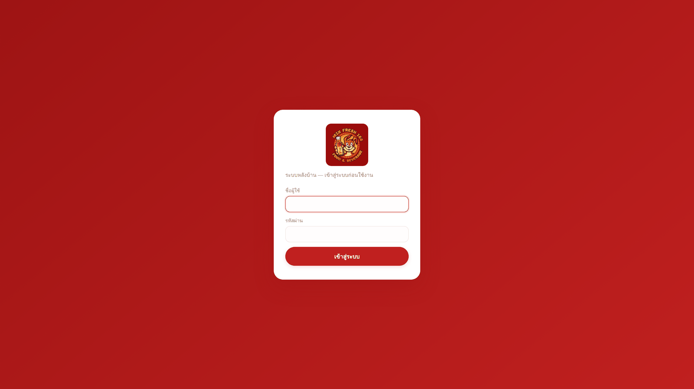
ภาพ 2.1 — หน้าเข้าสู่ระบบ
ถ้าขึ้นว่า "ชื่อผู้ใช้หรือรหัสผ่านไม่ถูกต้อง"
เช็ค 3 อย่างตามลำดับ: (1) พิมพ์ชื่อผู้ใช้เป็นตัวเล็กทั้งหมดหรือยัง (2) ปุ่ม Caps Lock ค้างอยู่ไหม
(3) แป้นพิมพ์เป็นภาษาไทยอยู่หรือเปล่า — ถ้ายังเข้าไม่ได้ ให้ admin ตั้งรหัสผ่านใหม่ให้ในหน้า "ผู้ใช้ระบบ"
ระบบจำการเข้าสู่ระบบให้
เข้าครั้งเดียวแล้วปิดแท็บไป เปิดใหม่ในเครื่องเดิมมักจะเข้าได้เลยโดยไม่ต้องกรอกซ้ำ
ถ้าใช้เครื่องที่คนอื่นใช้ด้วย ให้กด ออกจากระบบ มุมล่างซ้ายทุกครั้ง
2.2 ทำความรู้จักหน้าจอ
เมื่อเข้าระบบได้ จะเจอหน้า ภาพรวม เป็นหน้าแรกเสมอ
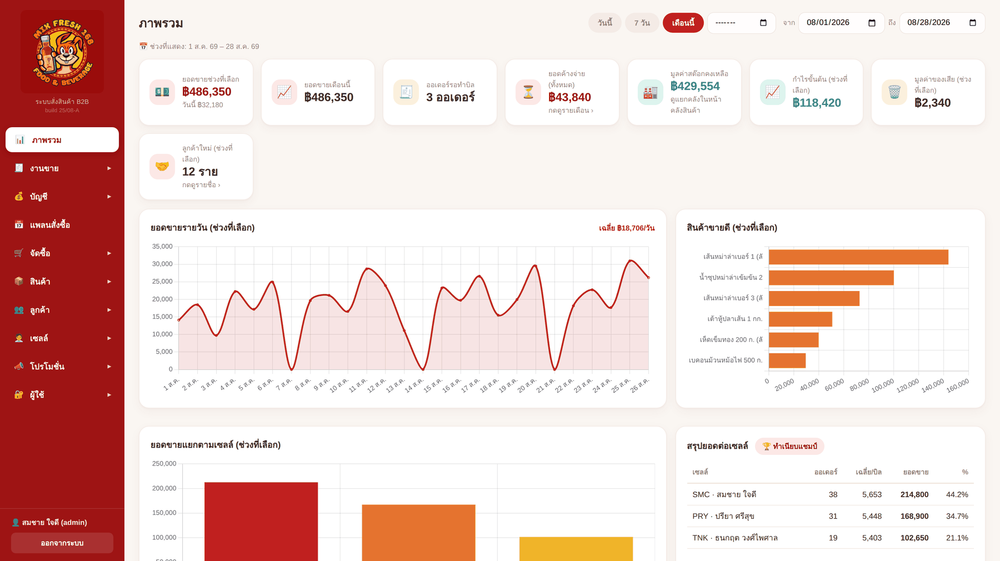
ภาพ 2.2 — หน้าภาพรวม (ตัวเลขในภาพเป็นข้อมูลตัวอย่าง)
| ส่วนของหน้าจอ | คืออะไร |
|---|
| แถบซ้ายมือ (สีแดง) | เมนูทั้งหมด กดหัวข้อเพื่อกางเมนูย่อย · ล่างสุดบอกว่าตอนนี้ใครเข้าระบบอยู่ และมีปุ่มออกจากระบบ |
| ใต้โลโก้ | ตัวเลขเวอร์ชันหน้าเว็บ เช่น build 25/08-A — เวลาแจ้งปัญหาให้บอกเลขนี้ด้วยเสมอ |
| ปุ่มช่วงเวลามุมขวาบน | วันนี้ · 7 วัน · เดือนนี้ หรือเลือกเดือน/ช่วงวันที่เอง — การ์ดและกราฟทั้งหน้าจะเปลี่ยนตาม |
| การ์ดสรุป 8 ใบ | ยอดขาย กำไร ออเดอร์ค้าง ยอดค้างจ่าย มูลค่าสต๊อก ของเสีย และลูกค้าใหม่ (บางใบกดเข้าไปดูรายละเอียดได้) |
| กราฟและตารางด้านล่าง | ยอดขายรายวัน สินค้าขายดี ยอดต่อเซลล์ ลูกหนี้ตามอายุหนี้ และสินค้าใกล้หมด |
2.3 เมนูมีอะไรบ้าง
| กลุ่มเมนู | หน้างาน | ใช้ทำอะไร |
|---|
| ภาพรวม | ภาพรวม | ดูสรุปทั้งร้าน |
| งานขาย | ทำบิล | ออกบิลจากออเดอร์ที่ลูกค้าสั่งเข้ามา |
| ใบเสนอราคา | ทำใบเสนอราคาส่งลูกค้า |
| บัญชี | บัญชี | ตามหนี้ รับยอด แนบสลิป ออก Excel |
| รายจ่าย (Petty Cash) | บันทึกรายจ่ายย่อยพร้อมรูปใบเสร็จ |
| แพลนสั่งซื้อ | แพลนสั่งซื้อ | คำนวณว่ารอบหน้าต้องสั่งอะไรเท่าไหร่ |
| จัดซื้อ | รายการสั่งซื้อ | ดูของที่ต้องซื้อและส่งข้อความสั่งซัพพลายเออร์ |
| ซัพพลายเออร์ | ทะเบียนผู้ขาย |
| สินค้า | สินค้า | เพิ่ม/แก้สินค้า ราคา รูป และสต๊อก |
| เดินรายการสินค้า | ไล่ดูว่าของเข้า-ออกจากไหนบ้าง |
| โอนโกดัง | เรียกของจากโกดังมาหน้าร้าน |
| รับสินค้า | บันทึกของที่รับเข้ามาใหม่ |
| คลังสินค้า | ดูยอดคงเหลือแยกคลัง และเพิ่มคลังใหม่ |
| นับ/ปรับสต๊อก | นับของจริงแล้วปรับให้ตรงระบบ |
| ลูกค้า | ลูกค้า | เพิ่ม/แก้ข้อมูลร้าน ที่อยู่ ลิงก์สั่งของ PIN |
| จัดสินค้า | เลือกว่าร้านไหนเห็นสินค้าอะไร ราคาเท่าไหร่ |
| คำนวณค่าส่ง | คิดค่าส่ง BI ตามจำนวนลัง |
| ลูกค้า CRM | ดูร้านที่ใกล้ถึงรอบสั่ง และร้านที่หายไปนาน |
| ประวัติสั่งซื้อ | ดูว่าร้านหนึ่งเคยสั่งอะไรไปบ้าง |
| แผนที่ลูกค้า | ดูตำแหน่งร้านบนแผนที่ ขนาดหมุดตามยอดขาย |
| เซลล์ | เซลล์ | เพิ่ม/แก้พนักงานขายและรหัส 3 ตัว |
| โปรโมชั่น | ส่งข้อความบรอดแคสต์ | ส่งข้อความ/รูป/โปรหาหลายร้านพร้อมกัน |
| รายละเอียดการลดราคา | ดูผลของโปรที่ตั้งไว้ |
| ผู้ใช้ | ผู้ใช้ระบบ (admin) | ตั้งค่าระบบ เพิ่มผู้ใช้ วันหยุด สำรองข้อมูล |
| ต้นทุนสินค้า | ดู/แก้ต้นทุน (ต้องใส่รหัส 6 หลัก) |
2.4 ออกจากระบบ
- มองมุมล่างซ้ายของแถบเมนู จะเห็นชื่อตัวเองอยู่
- กดปุ่ม ออกจากระบบ ใต้ชื่อ
- ระบบจะกลับไปหน้าเข้าสู่ระบบ
บทที่ 3ตั้งค่าระบบครั้งแรก (สำหรับ admin)
ทำครั้งเดียวตอนเริ่มต้น แล้วแทบไม่ต้องกลับมาแก้อีก — ถ้าคุณเป็น staff ข้ามไปบทที่ 4 ได้เลย
3.1 เข้าหน้าตั้งค่า
- ที่เมนูซ้ายมือ กด ผู้ใช้ เพื่อกางเมนูย่อย
- กด ผู้ใช้ อีกครั้ง (เมนูย่อยอันบน)
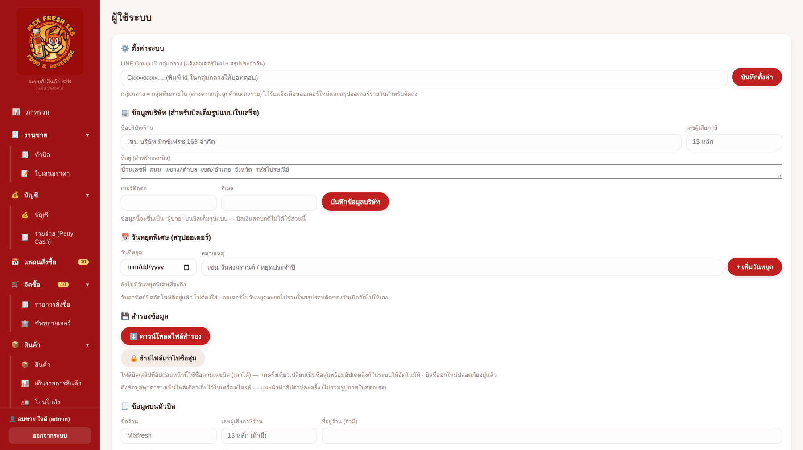
ภาพ 3.1 — หน้าผู้ใช้ระบบ ด้านบนเป็นส่วนตั้งค่าระบบ
3.2 ตั้งกลุ่มไลน์กลาง
กลุ่มกลางคือกลุ่มไลน์ของทีมเราเอง ใช้รับแจ้งออเดอร์ใหม่และสรุปประจำวัน
- เชิญบอทของระบบเข้ากลุ่มไลน์ของทีม
- พิมพ์
id ในกลุ่มนั้น บอทจะตอบรหัสกลุ่มกลับมา (ขึ้นต้นด้วยตัว C)
- คัดลอกรหัสนั้นมาวางในช่อง LINE Group ID กลุ่มกลาง
- กด บันทึกตั้งค่า
3.3 กรอกข้อมูลบริษัทและหัวบิล
- ในหัวข้อ 🏢 ข้อมูลบริษัท กรอกชื่อบริษัท เลขผู้เสียภาษี 13 หลัก ที่อยู่ เบอร์ และอีเมล
- กด บันทึกข้อมูลบริษัท
- เลื่อนลงไปหัวข้อ 🧾 ข้อมูลบนหัวบิล กรอกเบอร์กลางและอีเมลกลางไว้เป็นค่าสำรอง
- กด บันทึกข้อมูลบิล
ค่าสำรองใช้เมื่อไหร่
เบอร์และอีเมลบนหัวบิลจะดึงจากเซลล์ที่ดูแลร้านนั้นก่อนเสมอ ถ้าร้านไหนยังไม่มีเซลล์ ระบบจึงจะใช้ค่ากลางที่ตั้งไว้
3.4 ใส่วันหยุดพิเศษ
วันหยุดที่ใส่ไว้ ระบบจะไม่ส่งสรุปออเดอร์ตอนเช้า และจะยกออเดอร์ไปรวมในรอบของวันเปิดถัดไปให้
- ที่หัวข้อ 📅 วันหยุดพิเศษ เลือกวันที่
- ใส่หมายเหตุ เช่น "วันสงกรานต์"
- กด + เพิ่มวันหยุด
ไม่ต้องใส่วันอาทิตย์ระบบข้ามวันอาทิตย์ให้อัตโนมัติอยู่แล้ว
3.5 เพิ่มผู้ใช้ใหม่
- เลื่อนลงมาที่การ์ด เพิ่มผู้ใช้
- กรอก ชื่อผู้ใช้ เป็นภาษาอังกฤษตัวเล็ก (ระบบบังคับให้เป็นตัวเล็กอยู่แล้ว)
- กรอก ชื่อที่แสดง เป็นภาษาไทยได้ เช่น "สมชาย" — ชื่อนี้จะไปโผล่ในช่อง "คนออกบิล" "คนรับยอด" ฯลฯ
- เลือก บทบาท:
staff สำหรับพนักงานทั่วไป หรือ admin สำหรับคนที่ต้องจัดการผู้ใช้ได้
- ตั้ง รหัสผ่าน
- กด บันทึก
เวลาแก้ผู้ใช้เดิม
ถ้าไม่ต้องการเปลี่ยนรหัสผ่าน ให้เว้นช่องรหัสผ่านว่างไว้ ถ้าพิมพ์อะไรลงไปจะกลายเป็นรหัสใหม่ทันที
3.6 สำรองข้อมูล
- ที่หัวข้อ 💾 สำรองข้อมูล กด ⬇️ ดาวน์โหลดไฟล์สำรอง
- รอจนขึ้นว่าเสร็จ แล้วเก็บไฟล์ไว้ในไดรฟ์หรือฮาร์ดดิสก์สำรอง
ทำอย่างน้อยสัปดาห์ละครั้ง
ไฟล์สำรองเก็บข้อมูลทุกตาราง แต่ไม่รวมรูปภาพที่อยู่ในที่เก็บไฟล์ ถือเป็นตาข่ายกันพลาดชั้นสุดท้ายของร้าน
บทที่ 4ตั้งต้นข้อมูลหลัก: เซลล์ · สินค้า · ลูกค้า
สามอย่างนี้ต้องทำตามลำดับ เพราะรหัสลูกค้าวิ่งต่อจากรหัสเซลล์ และลูกค้าจะสั่งของได้ก็ต่อเมื่อมีสินค้าจัดให้แล้ว
1
เพิ่มเซลล์ตั้งรหัส 3 ตัวอักษร
2
เพิ่มสินค้าตั้ง SKU ราคา หน่วย
3
เพิ่มลูกค้าเลือกเซลล์ก่อนเสมอ
4
จัดสินค้าเลือกของ + ราคาเฉพาะร้าน
5
ส่งลิงก์ผูกกลุ่มไลน์ + ตั้ง PIN
4.1 เพิ่มเซลล์
- เมนูซ้าย → เซลล์ → เซลล์
- กรอก รหัสเซลล์ เป็นตัวอักษรอังกฤษพิมพ์ใหญ่ 3 ตัวพอดี เช่น
SMC
- กรอก ชื่อเซลล์, เบอร์โทร 10 หลัก และ อีเมล
- กด บันทึก
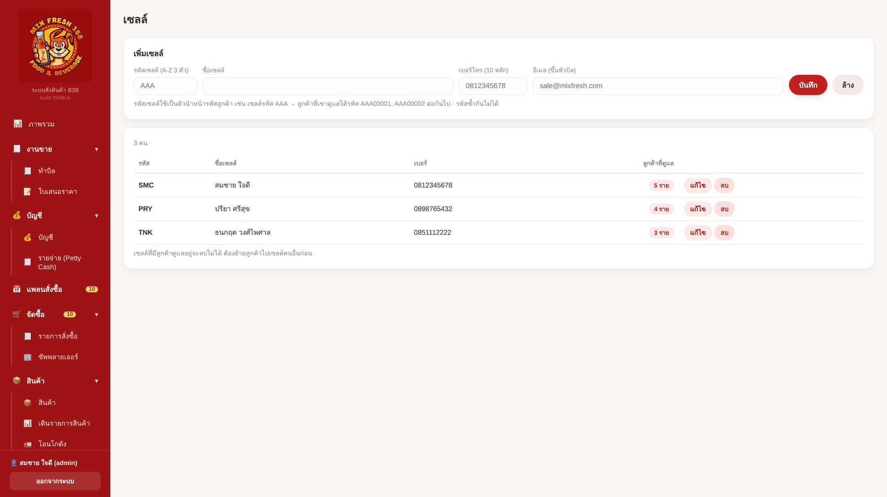
ภาพ 4.1 — หน้าเซลล์
รหัสเซลล์สำคัญมาก
รหัสนี้จะกลายเป็น 3 ตัวหน้าของรหัสลูกค้าทุกร้านที่เขาดูแล เช่น เซลล์ SMC → ลูกค้าได้รหัส SMC00001, SMC00002 ไล่ไปเรื่อย ๆ
ตั้งแล้วไม่ควรเปลี่ยน เพราะต้องไล่แก้รหัสลูกค้าทั้งหมดตาม · เบอร์และอีเมลของเซลล์จะขึ้นบนหัวบิลของร้านที่เขาดูแล
ลบเซลล์ไม่ได้
เซลล์ที่ยังมีลูกค้าดูแลอยู่จะลบไม่ได้ ต้องย้ายลูกค้าไปเซลล์คนอื่นให้หมดก่อน
4.2 เพิ่มสินค้า
- เมนูซ้าย → สินค้า → สินค้า
- ที่การ์ด เพิ่มสินค้า เลือก หมวดสินค้า ก่อน — ระบบจะรันรหัส SKU ให้อัตโนมัติตามหมวด
- ถ้ายังไม่มีหมวดที่ต้องการ กดลิงก์ จัดการหมวด เพื่อเพิ่มหมวดใหม่
- กรอก ชื่อสินค้า ให้เป็นชื่อที่ลูกค้าอ่านแล้วเข้าใจ เพราะชื่อนี้จะไปขึ้นบนหน้าสั่งของและบนบิล
- กรอก หน่วยขาย เช่น ลัง / ถุง / แพ็ค / ขวด
- กรอก ราคากลาง — ใช้เป็นราคาตั้งต้นสำหรับร้านที่ยังไม่ได้ตั้งราคาเฉพาะ
- กรอกตัวเลขคุมสต๊อก
- เตือนใกล้หมด — เหลือน้อยกว่านี้จะขึ้นเตือนในหน้าภาพรวม
- Safety Stock — ระดับที่ควรมีติดคลังไว้เสมอ ใช้คำนวณใบโอนและแผนสั่งซื้อ
- Max Stock — เพดานที่ไม่ควรเกิน ใช้คำนวณจำนวนที่ควรเรียกของ
- ถ้ามี ให้ติ๊ก ซัพพลายเออร์ ที่ขายสินค้าตัวนี้ (ติ๊กได้หลายราย)
- กด 📷 เลือกรูป เพื่อใส่รูปสินค้า (ไม่บังคับ แต่ช่วยให้ลูกค้าสั่งถูกตัวมาก)
- กด บันทึก
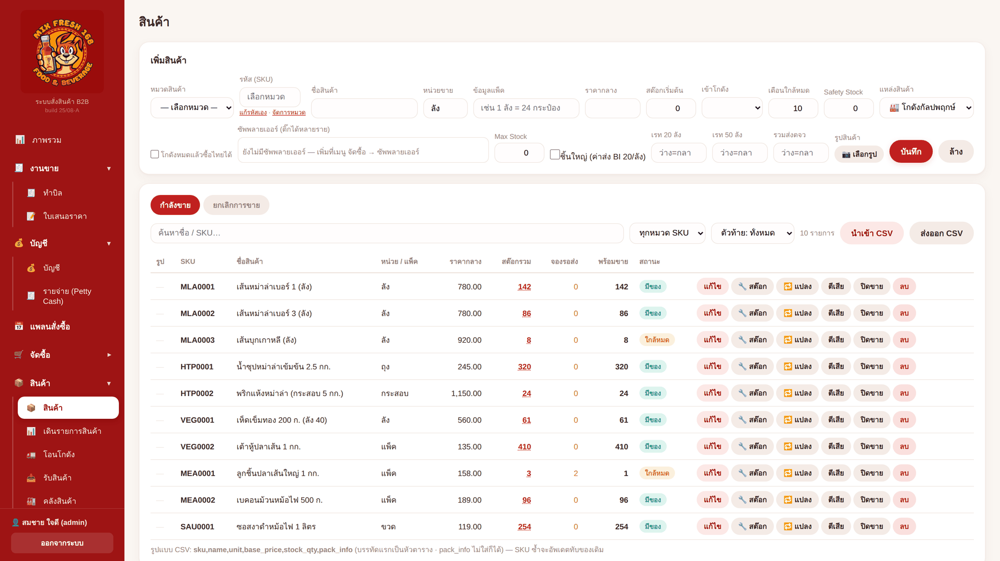
ภาพ 4.2 — หน้าสินค้า พร้อมฟอร์มเพิ่มสินค้า
มีสินค้าเยอะมาก
ใช้ปุ่ม นำเข้า CSV เพื่ออัปทีเดียวหลายรายการ และ ส่งออก CSV เพื่อดึงรายการปัจจุบันออกมาแก้ใน Excel ได้
อย่ากรอกสต๊อกเริ่มต้นถ้าจะรับของเข้าอยู่แล้ว
ช่อง สต๊อกเริ่มต้น มีไว้ตอนย้ายข้อมูลเข้าระบบครั้งแรกเท่านั้น
ของที่รับเข้ามาจริงควรบันทึกผ่านหน้า รับสินค้า เสมอ เพื่อให้ระบบสร้างล็อตและรู้ต้นทุน FIFO
4.3 เพิ่มลูกค้าใหม่
- เมนูซ้าย → ลูกค้า → ลูกค้า
- เลือก เซลล์ที่ดูแล ก่อนเป็นอันดับแรก — รหัสลูกค้าจะรันต่อจากรหัสเซลล์ให้อัตโนมัติ
- กรอก ชื่อร้าน
- ส่วน 🧾 ข้อมูลออกบิล — ข้อมูลชุดนี้จะไปขึ้นบนบิล
- ชื่อลูกค้า (ผู้ติดต่อ) — ชื่อคนที่เราคุยด้วย
- เบอร์โทร — ต้องเป็นตัวเลข 10 หลักพอดี
- เลขผู้เสียภาษี — 13 หลัก ถ้าไม่มีเว้นว่างได้
- ที่อยู่ — พิมพ์รหัสไปรษณีย์ 5 หลักก่อน ระบบจะเติมจังหวัด/อำเภอให้ แล้วค่อยเลือกตำบล
- ส่วน 🚚 ข้อมูลจัดส่ง — ถ้าที่อยู่ส่งของเหมือนที่อยู่บิล กดปุ่ม คัดลอกจากข้อมูลบิล ได้เลย
- ชื่อผู้รับของ และ เบอร์ผู้รับ — ใช้ตอนเรียกรถส่งของ
- Google Map Link — วางลิงก์แผนที่ ช่วยคนส่งของหาไม่หลง และใช้ปักหมุดในหน้าแผนที่ลูกค้า
- เวลารับของ — ช่วงเวลาที่ร้านสะดวกรับ
- วิธีจัดส่ง — Lalamove / BI / แพ็คของ / มารับเอง (ใช้จัดกลุ่มในสรุปประจำวัน)
- เลือก ประเภทบิล ที่ร้านนี้ต้องการ (บิลเงินสด หรือบิลเต็มรูปแบบ)
- ถ้าร้านนี้ไม่ควรเห็นราคา ให้ติ๊ก 🙈 ซ่อนราคาจากหน้าสั่งของ
(ใช้กรณีเจ้าของร้านให้ลูกน้องเป็นคนกดสั่ง)
- กด บันทึก
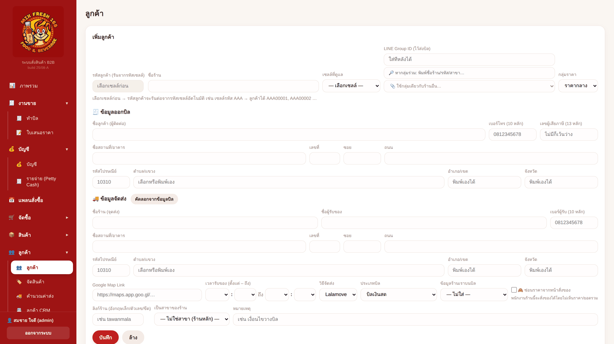
ภาพ 4.3 — ฟอร์มเพิ่มลูกค้า
ระบบเตือนข้อมูลซ้ำให้
ถ้าชื่อร้าน ชื่อผู้ติดต่อ เบอร์ หรือที่อยู่ ไปตรงกับลูกค้าของเซลล์คนอื่น ระบบจะเด้งเตือนพร้อมบอกว่าซ้ำกับร้านไหนของใคร
ให้อ่านก่อนกดยืนยัน จะได้ไม่แย่งลูกค้ากันเองโดยไม่ตั้งใจ
ร้านที่มีหลายสาขา
ให้สร้างร้านหลักก่อน แล้วสร้างสาขาเป็นลูกค้าอีกราย โดยเลือกช่อง เป็นสาขาของร้าน ให้ชี้ไปที่ร้านหลัก
4.4 จัดสินค้าให้ลูกค้า และตั้งราคาเฉพาะร้าน
ขั้นนี้ห้ามข้าม — ถ้ายังไม่จัดสินค้า ลูกค้าเปิดลิงก์มาจะเห็นหน้าว่างเปล่า
- เมนูซ้าย → ลูกค้า → จัดสินค้า
- ค้นหาและเลือกร้านที่ต้องการในช่องด้านบน
- ติ๊กเครื่องหมาย ✓ หน้าสินค้าที่อยากให้ร้านนี้เห็นและสั่งได้
- ใช้ปุ่ม ✓ เลือกที่แสดง เพื่อติ๊กทั้งหมดที่กรองอยู่ทีเดียว
- ถ้าร้านนี้ได้ราคาพิเศษ ให้พิมพ์ราคาลงในช่องราคาของสินค้านั้น (เว้นว่าง = ใช้ราคากลาง)
- กด บันทึก
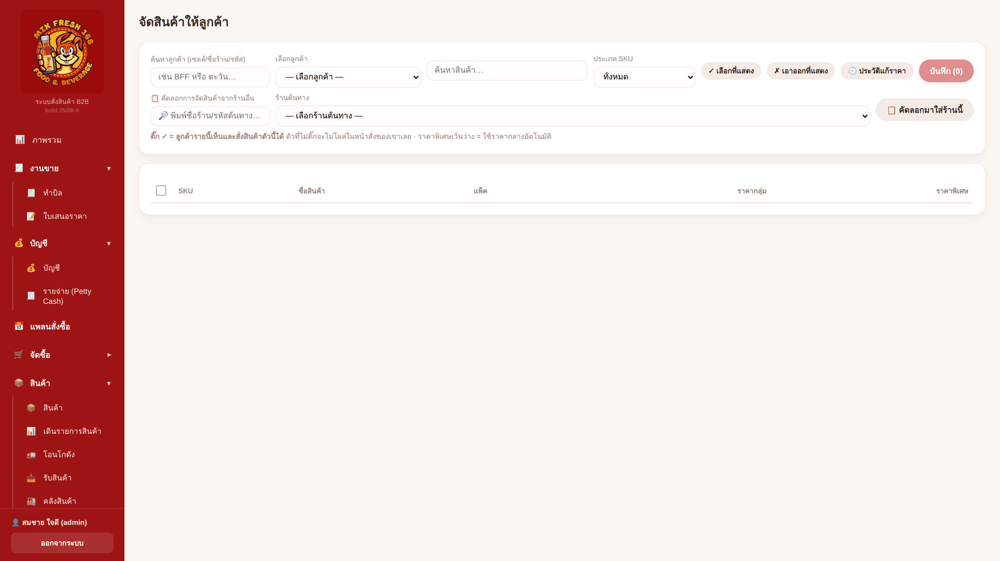
ภาพ 4.4 — หน้าจัดสินค้าให้ลูกค้า
ร้านใหม่ที่คล้ายร้านเดิม
ใช้ 📋 คัดลอกการจัดสินค้าจากร้านอื่น เลือกร้านต้นทาง แล้วกด คัดลอกมาใส่ร้านนี้ — ประหยัดเวลาได้มาก
อยากรู้ว่าใครเปลี่ยนราคา
กด 🕘 ประวัติแก้ราคา จะเห็นว่าใครแก้ราคาอะไร เมื่อไหร่
4.5 สร้างลิงก์สั่งของ ผูกกลุ่มไลน์ และตั้ง PIN
- กลับไปหน้า ลูกค้า แล้วหาแถวของร้านนั้นในตารางด้านล่าง
- กดปุ่มสร้าง/คัดลอกลิงก์สั่งของของร้าน แล้วส่งลิงก์นั้นให้ลูกค้า
- แนะนำให้ลูกค้าปักหมุดลิงก์ไว้ในกลุ่มไลน์ของร้าน จะได้ไม่หาย
- ผูกกลุ่มไลน์ของร้าน: เชิญบอทเข้ากลุ่มของร้านนั้น แล้วพิมพ์
id ในกลุ่ม
เอารหัสที่บอทตอบมาใส่ในช่อง LINE Group ID ของลูกค้ารายนั้น
- ตั้ง PIN 6 หลัก ให้ร้าน แล้วบอกรหัสนี้กับเจ้าของร้าน
ถ้ายังไม่ผูกกลุ่มไลน์
ตอนออกบิล ระบบจะบอกว่า "ลูกค้ายังไม่ผูกกลุ่ม LINE — บิลจะออกเป็นรูปให้เปิดดูแทน"
บิลยังออกได้ตามปกติ แต่ต้องส่งให้ลูกค้าเอง
ลูกค้าลืม PIN
ให้ลูกค้าพิมพ์ เปลี่ยน 123456 (ตามด้วยรหัสใหม่ที่ต้องการ) ในกลุ่มไลน์ของร้าน ระบบจะตั้งรหัสใหม่ให้เอง
บทที่ 5ฝั่งลูกค้า: สั่งของยังไง
บทนี้ไว้ใช้สอนลูกค้า หรือแคปหน้าจอส่งให้ลูกค้าดู — ทั้งหมดทำบนมือถือ ไม่ต้องโหลดแอป
5.1 เปิดลิงก์และเลือกสินค้า
- ลูกค้ากดลิงก์ที่เราส่งให้ (หรือลิงก์ที่ปักหมุดไว้ในกลุ่ม)
- ด้านบนจะขึ้นรหัสและชื่อร้านของตัวเอง ถ้าขึ้นชื่อร้านอื่นแปลว่าส่งลิงก์ผิด
- เลื่อนหาสินค้า หรือพิมพ์ค้นหาในช่อง 🔍 ค้นหาสินค้า
- กดปุ่ม + เพื่อเพิ่มจำนวน หรือ − เพื่อลด
- แถบล่างสุดจะรวมยอดให้ตลอด เมื่อพร้อมแล้วกด สั่งสินค้า
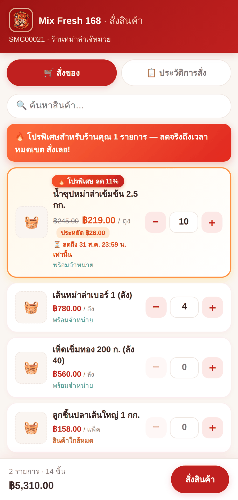
ภาพ 5.1 — หน้าเลือกสินค้า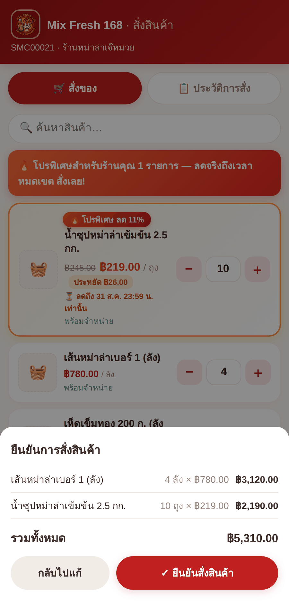
ภาพ 5.2 — หน้ายืนยันรายการป้ายสถานะสินค้า
ลูกค้าจะเห็นแค่ พร้อมจำหน่าย / สินค้าใกล้หมด / สินค้าหมด ไม่เห็นตัวเลขคงเหลือจริงของเรา
ส่วนสินค้าที่กำลังลดราคาจะมีป้าย 🔥 และถูกดันขึ้นไปอยู่บนสุด
5.2 ยืนยันและใส่ PIN
- ตรวจรายการในหน้ายืนยัน ถ้าผิดกด กลับไปแก้
- กด ✓ ยืนยันสั่งสินค้า
- ระบบจะขอ รหัส 6 หลักของร้าน — ใส่แล้วกด ✓ ยืนยัน
- กรอกครั้งเดียว เครื่องนั้นจะจำให้ ครั้งต่อไปไม่ต้องกรอกอีก
- เมื่อสำเร็จจะขึ้นเครื่องหมายถูกสีเขียวพร้อมเลขออเดอร์
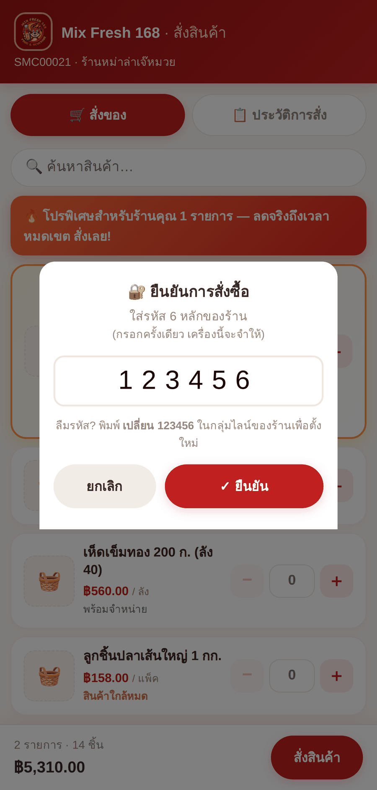
ภาพ 5.3 — หน้าใส่รหัส PIN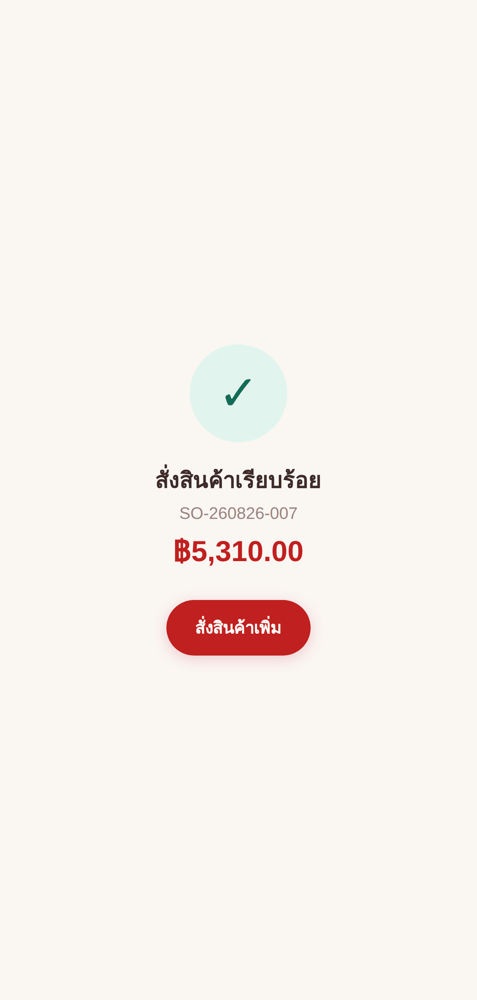
ภาพ 5.4 — สั่งสำเร็จ พร้อมเลขออเดอร์ลูกค้าดูประวัติเองได้
แท็บ 📋 ประวัติการสั่ง ด้านบน ให้ลูกค้าย้อนดูได้ว่าเคยสั่งอะไรไปบ้าง เลือกช่วง 7 / 30 / 90 วัน หรือกำหนดเอง
สั่งแล้วยกเลิกเองไม่ได้
ถ้าลูกค้าสั่งผิด ให้แจ้งเซลล์ แล้วเราไปแก้หรือยกเลิกให้ในหน้า ทำบิล (ดูหัวข้อ 6.4)
บทที่ 6งานประจำวัน: จากออเดอร์เป็นบิล
นี่คือหน้าที่ใช้บ่อยที่สุดในแต่ละวัน — อ่านบทนี้ให้จบก่อนลงมือจริง
1
ออเดอร์เข้าระบบจองสต๊อก + แจ้งกลุ่มกลาง
2
ตรวจ + ใส่ค่าส่งดูต้นทุน/กำไรก่อนตัดสินใจ
3
ออกบิลตัดสต๊อกจริง + กินเลขบิล
4
ส่งเข้าไลน์วาดรูปบิลส่งกลุ่มร้าน
5
ส่งของ + รับยอดต่อที่หน้าบัญชี
6.1 เปิดหน้าทำบิล
- เมนูซ้าย → งานขาย → ทำบิล
- ออเดอร์ที่ลูกค้าสั่งเข้ามาและยังไม่ออกบิล จะเรียงเป็นการ์ดอยู่ที่นี่
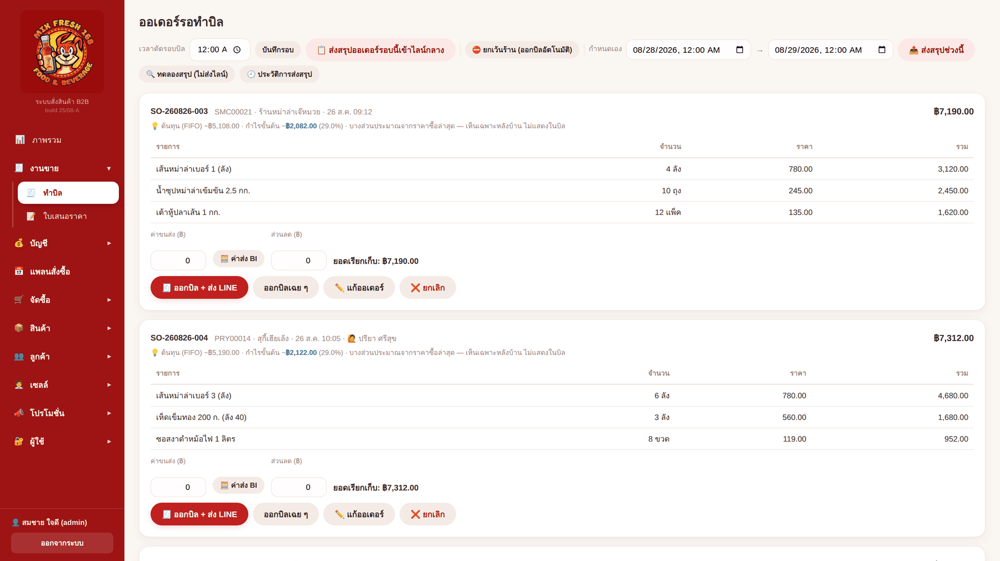
ภาพ 6.1 — หน้าทำบิล (1 การ์ด = 1 ออเดอร์ที่รอออกบิล)
ในการ์ดหนึ่งใบมีอะไรบ้าง
| ส่วนของการ์ด | ความหมาย |
|---|
| หัวการ์ด | เลขออเดอร์ · รหัสและชื่อร้าน · วันเวลาที่สั่ง · ยอดรวม |
| 🙋 ชื่อคน / 🛒 ลูกค้าสั่งเอง | บอกว่าออเดอร์นี้พนักงานคนไหนเป็นคนคีย์ให้ หรือลูกค้ากดสั่งเองจากลิงก์ |
| 💡 บรรทัดต้นทุน | ต้นทุน FIFO โดยประมาณ และกำไรขั้นต้นเป็นบาทและเปอร์เซ็นต์ — เห็นเฉพาะหลังบ้าน ไม่ขึ้นบนบิล |
| ตารางรายการ | สินค้า จำนวน ราคาต่อหน่วย และยอดรวมของแต่ละบรรทัด |
| ค่าขนส่ง / ส่วนลด | ช่องกรอกตัวเลข ใส่แล้วยอดเรียกเก็บด้านขวาจะอัปเดตทันที |
6.2 ออกบิล
- อ่านรายการในการ์ดให้ครบก่อนว่าตรงกับที่ตกลงกับลูกค้าไหม
- ถ้ามีค่าส่ง ใส่ตัวเลขในช่อง ค่าขนส่ง (฿)
- ถ้าร้านนี้ส่งด้วย BI กด 🧮 ค่าส่ง BI ระบบจะคำนวณตามเรทของร้านให้
- ถ้ามีส่วนลด ใส่ในช่อง ส่วนลด (฿)
- ตรวจ ยอดเรียกเก็บ อีกครั้ง
- เลือกปุ่มที่จะกด
- 🧾 ออกบิล + ส่ง LINE — ใช้เป็นปกติ ระบบออกบิล วาดรูป และส่งเข้ากลุ่มไลน์ของร้านให้เลย
- ออกบิลเฉย ๆ — ออกบิลแต่ยังไม่ส่ง เอาไว้ใช้ตอนอยากตรวจก่อน หรือร้านยังไม่ผูกกลุ่มไลน์
- รอจนขึ้นข้อความยืนยัน แล้วการ์ดนั้นจะหายไปจากหน้านี้ (ย้ายไปอยู่หน้าบัญชีแล้ว)
ออกบิลแล้วเลขบิลจะถูกใช้ไปเลย
ต่อให้ยกเลิกทีหลัง เลขบิลนั้นก็จะไม่ถูกนำกลับมาใช้ซ้ำ ดังนั้นตรวจให้ครบก่อนกด
ถ้าต้องแก้ของในออเดอร์ ให้แก้ก่อนออกบิล (ข้อ 6.4) เพราะการแก้ตอนนั้นไม่กินเลขบิล
6.3 ออกบิลอัตโนมัติ และรอบตัดบิล
ถ้าไม่มีใครกดออกบิลเอง ระบบจะออกให้เองทุก 3 นาที สำหรับออเดอร์ที่ถึงรอบแล้ว
- ที่หัวหน้าทำบิล ดูช่อง เวลาตัดรอบบิล
- ปรับเวลาที่ต้องการ เช่น
18:00 แปลว่ารอบคือเมื่อวาน 18:00 ถึงวันนี้ 18:00
- กด บันทึกรอบ
ยกเว้นร้านที่ไม่อยากให้ออกบิลอัตโนมัติ
- กด ⛔ ยกเว้นร้าน (ออกบิลอัตโนมัติ)
- เลือกร้านที่ต้องการยกเว้น เช่น ร้านทดสอบ หรือร้านที่ต้องคุยราคาก่อนทุกครั้ง
- บันทึก — ออเดอร์ของร้านเหล่านี้จะรออยู่ในหน้าทำบิลจนกว่าเราจะกดออกเอง
6.4 แก้ออเดอร์ หรือยกเลิกออเดอร์
- หาการ์ดออเดอร์ที่ต้องการในหน้า ทำบิล
- กด ✏️ แก้ออเดอร์ เพื่อเพิ่ม/ลบสินค้า หรือแก้จำนวน แล้วบันทึก
- การแก้ตรงนี้ไม่กินเลขบิล เพราะยังไม่ได้ออกบิล
- ถ้าจะยกเลิกทั้งใบ กด ❌ ยกเลิก — ระบบจะคืนยอดจองสต๊อกให้อัตโนมัติ
6.5 ส่งสรุปออเดอร์เข้ากลุ่มกลาง
สรุปนี้คือรายการที่ทีมจัดส่งใช้จัดของ แยกตามวิธีขนส่ง พร้อมที่อยู่ เบอร์ และลิงก์แผนที่
- ปกติระบบส่งให้เองทุกเช้า 06:00 น. ไม่ต้องทำอะไร
- ถ้าอยากส่งเดี๋ยวนี้ กด 📋 ส่งสรุปออเดอร์รอบนี้เข้าไลน์กลาง
- ถ้าอยากส่งเฉพาะช่วงเวลาที่กำหนดเอง ใส่วันเวลาในช่อง กำหนดเอง ทั้งสองช่อง แล้วกด 📤 ส่งสรุปช่วงนี้
- อยากดูก่อนว่าจะออกมาหน้าตาแบบไหน โดยยังไม่ส่งจริง กด 🔍 ทดลองสรุป (ไม่ส่งไลน์)
- อยากรู้ว่าที่ผ่านมาส่งไปแล้วกี่รอบ กด 🕘 ประวัติการส่งสรุป
ระบบกันส่งซ้ำให้แล้ว
ต่อให้กดส่งพร้อมกันหลายคน หรือรอบอัตโนมัติวิ่งชนกัน สรุปรอบหนึ่งจะออกแค่ครั้งเดียวเสมอ
บทที่ 7บัญชี: ตามหนี้ รับยอด และรายจ่าย
หน้าบัญชีคือศูนย์กลางของทุกบิลที่ออกไปแล้ว — ตั้งแต่ยังไม่ส่งของ จนถึงเก็บเงินครบ
7.1 เปิดหน้าบัญชีและอ่านตาราง
- เมนูซ้าย → บัญชี → บัญชี
- ค่าเริ่มต้นจะกรองไว้ที่แท็บ ค้างจ่าย
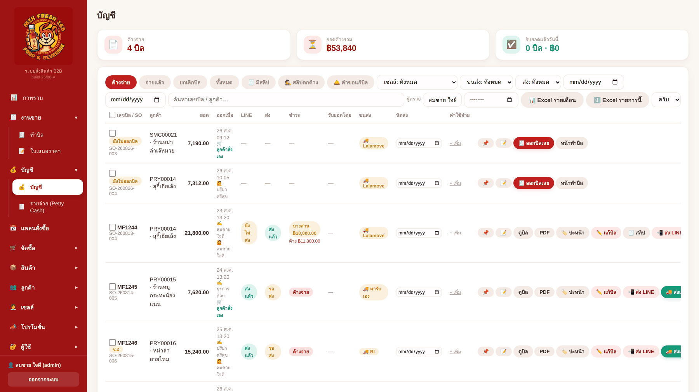
ภาพ 7.1 — หน้าบัญชี
| คอลัมน์ | อ่านยังไง |
|---|
| เลขบิล / SO | เลขบิล และเลขออเดอร์ต้นทาง · ป้าย v.2 แปลว่าบิลใบนี้เคยถูกแก้ · แถวที่ขึ้นป้าย "ยังไม่ออกบิล" คือออเดอร์ที่รออยู่ |
| ลูกค้า | รหัสและชื่อร้าน |
| ยอด | ยอดเรียกเก็บทั้งใบ (รวมค่าส่ง หักส่วนลดแล้ว) |
| ออกเมื่อ | วันเวลาที่ออกบิล · ✍️ = คนออกบิล · 🙋 = คนสั่งออเดอร์ · 🛒 = ลูกค้าสั่งเอง |
| LINE | ส่งบิลเข้ากลุ่มไลน์แล้วหรือยัง |
| ส่ง | รอส่ง / ส่งแล้ว / ยกเลิก |
| ชำระ | ค้างจ่าย / จ่ายบางส่วน (บอกยอดค้างที่เหลือ) / ✓ จ่ายแล้ว |
| รับยอดโดย | ใครกดรับยอด และเมื่อไหร่ |
| ขนส่ง · นัดส่ง · ค่าใช้จ่าย | วิธีส่ง วันนัดส่ง และค่าใช้จ่ายเพิ่มเติมของบิลนั้น |
ตัวกรองที่ใช้บ่อย
- แท็บด้านบน — ค้างจ่าย / จ่ายแล้ว / ยกเลิกบิล / ทั้งหมด / 🧾 มีสลิป
- เซลล์ · ขนส่ง · สถานะส่ง — เลือกซ้อนกันได้ เช่น "ของเซลล์ปรียา ที่ส่ง BI และยังรอส่ง"
- ช่วงวันที่ — เลือกตั้งแต่/ถึง
- ช่องค้นหา — พิมพ์เลขบิล เลขออเดอร์ หรือชื่อร้าน
7.2 รับยอด (บันทึกว่าเงินเข้าแล้ว)
- ใส่ชื่อตัวเองในช่อง ผู้ตรวจ ด้านบน (ปกติระบบเติมให้แล้ว)
- หาแถวบิลที่ต้องการ
- กดปุ่มรับยอดที่ท้ายแถว
- ถ้าลูกค้าจ่ายครบ ให้ยืนยันยอดเต็ม · ถ้าจ่ายบางส่วน ให้ใส่จำนวนที่ได้รับจริง
- ระบบจะบันทึกชื่อคนรับยอดและเวลาไว้ให้อัตโนมัติ
รับยอดผิดใบ
กดปุ่มยกเลิกการรับยอดที่แถวเดิม ระบบจะคืนสถานะเป็นค้างจ่าย และเก็บประวัติไว้ให้ตรวจย้อนหลังได้
7.3 สลิปโอนเงิน
- แนบรูปสลิปเข้ากับบิลที่ตรงกัน
- ใช้แท็บ 🧾 มีสลิป เพื่อดูเฉพาะบิลที่มีสลิปแล้ว
- กด 🕵️ สลิปตกค้าง เพื่อดูสลิปที่ยังจับคู่กับบิลไม่ได้ แล้วจับคู่ให้เรียบร้อย
7.4 แก้บิล และยกเลิกบิล
- กดปุ่มแก้บิลที่ท้ายแถว
- ถ้าบิลนั้นยังไม่ส่งของและยังไม่รับยอด — แก้ได้เลย ระบบจะปรับสต๊อกและยอดให้ พร้อมเพิ่มเลขเวอร์ชันเป็น v.2
- ถ้าบิลนั้นส่งของแล้วหรือรับยอดแล้ว — ระบบจะสร้าง "คำขอแก้บิล" ส่งให้ admin
- admin เข้าไปกด 🛎️ คำขอแก้บิล เพื่ออนุมัติ
- เมื่ออนุมัติแล้ว ระบบจะแก้บิล ปรับสต๊อกที่โกดัง และคิดสถานะจ่ายใหม่ให้ทันที
- ถ้าจะยกเลิกทั้งใบ กดปุ่มยกเลิกบิล — บิลที่ยกเลิกจะไม่ถูกนับเป็นหนี้ค้างและไม่นับเป็นรายรับ แต่ยังดูย้อนหลังได้ในแท็บ ยกเลิกบิล
7.5 ดึงรายงานเป็น Excel
- เลือกเดือนในช่อง เดือน แล้วกด 📊 Excel รายเดือน
- หรือกรองรายการที่ต้องการไว้ก่อน แล้วกด ⬇️ Excel รายการนี้
- ไฟล์นี้มี 2 ชีต: สรุปรายบิล และรายการสินค้าพร้อมต้นทุน/กำไร
7.6 บันทึกรายจ่าย (Petty Cash)
- เมนูซ้าย → บัญชี → รายจ่าย (Petty Cash)
- เลือก วันที่จ่าย และ หมวดค่าใช้จ่าย
- กรอก รายละเอียด และ จำนวนเงิน (สองช่องนี้บังคับ)
- เลือก วิธีจ่าย และใส่ ผู้จ่าย/สำรองจ่าย
- ถ่ายรูปใบเสร็จแนบในช่อง ใบเสร็จ (รูป)
- กด 💾 บันทึกรายจ่าย
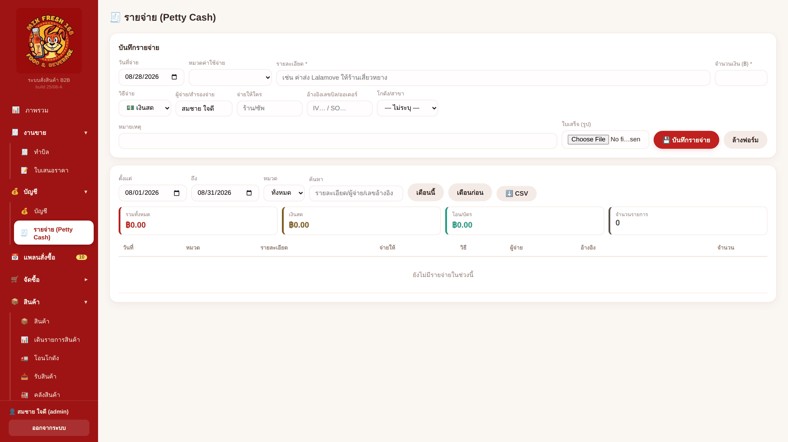
ภาพ 7.2 — หน้ารายจ่าย (Petty Cash)
บทที่ 8สต๊อกและคลังสินค้า
หัวใจคือ "ของเข้าต้องบันทึก ของออกระบบตัดให้" ถ้าทำครบ ตัวเลขในระบบจะตรงกับของจริงเสมอ
8.1 รับสินค้าเข้า
- เมนูซ้าย → สินค้า → รับสินค้า
- เลือก รับเข้าคลัง ว่าของกองนี้เข้าคลังไหน
- ใส่ ผู้ขาย / ที่มา (ไม่บังคับ แต่ใส่ไว้จะไล่ที่มาของล็อตได้)
- ใส่ชื่อ ผู้รับของ
- พิมพ์ชื่อสินค้าในช่องค้นหา แล้วกดเพิ่มเข้ารายการ
- ใส่จำนวนและราคาทุนต่อหน่วยของล็อตนี้ ทำซ้ำจนครบทุกตัว
- กด ✓ บันทึกรับเข้า
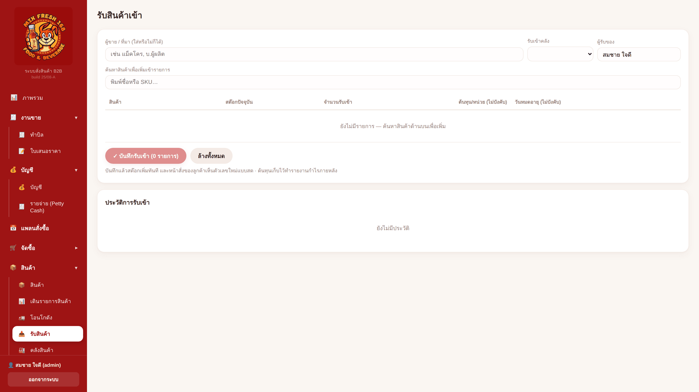
ภาพ 8.1 — หน้ารับสินค้าเข้า
ราคาทุนต้องใส่ให้ถูก
ตัวเลขนี้คือฐานของต้นทุน FIFO และกำไรทุกบิลที่ตัดจากล็อตนี้ ถ้าใส่ผิดจะทำให้กำไรทั้งเดือนเพี้ยน
บันทึกแล้วเห็นผลทันที
สต๊อกเพิ่มทันที และหน้าสั่งของของลูกค้าจะเห็นตัวเลขใหม่แบบสด ๆ โดยไม่ต้องรีเฟรช
8.2 โอนของจากโกดัง
- เมนูซ้าย → สินค้า → โอนโกดัง
- เลือก จากโกดัง (ต้นทาง) และ ไปโกดัง (ปลายทาง)
- กด 🧮 คำนวณแนะนำเรียกของ ระบบจะเสนอจำนวนให้ตามสูตร
- เรียก = (Max ถ้าตั้งไว้ ไม่งั้นใช้ Safety) + ยอดจองรอส่ง − ของคงเหลือปลายทาง
- ปรับจำนวนตามจริง หรือกด + เพิ่ม เพื่อใส่สินค้าเอง
- กด 💾 บันทึกใบโอน + แจ้ง LINE
- เมื่อของถึงปลายทาง ให้ไปที่หน้า รับสินค้า หัวข้อ 🚛 รอรับเข้าจากโกดัง แล้วกดยืนยันรับ
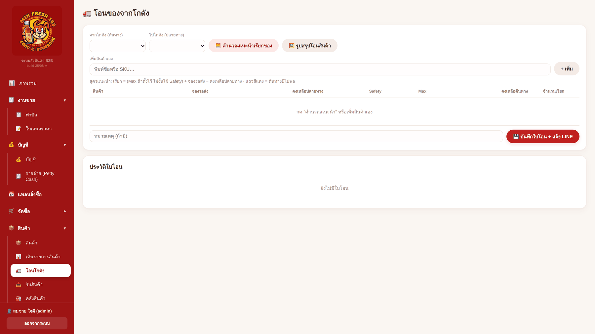
ภาพ 8.2 — หน้าโอนของจากโกดัง
อยากได้ใบเรียกของเป็นรูป
กด 🖼️ รูปสรุปโอนสินค้า จะได้รูปที่ส่งให้ทีมโกดังหยิบของได้เลย ชื่อสินค้ายาวจะถูกแบ่งเป็น 2 บรรทัดให้อ่านง่าย
8.3 นับ / ปรับสต๊อก
- เมนูซ้าย → สินค้า → นับ/ปรับสต๊อก
- เลือก โกดัง และ ชุดสินค้า ที่จะนับ
- กด 📄 PDF ใบเช็คสต๊อก (นับมือ) แล้วปริ้นไปนับที่คลัง
- กลับมากรอกจำนวนที่นับได้จริงลงในตาราง
- แถวที่ขึ้นสีแดง คือนับได้ไม่ตรงกับระบบ
- กด ✓ ยืนยันผลนับ + สรุปเดินสต๊อก
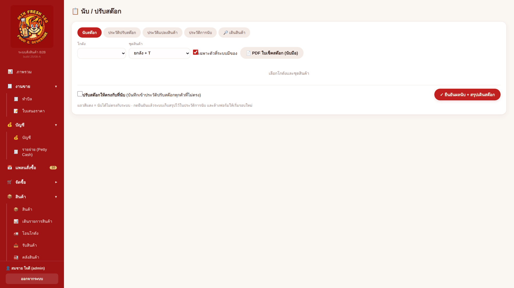
ภาพ 8.3 — หน้านับ / ปรับสต๊อก
ดูย้อนหลังได้
แท็บด้านบนมี ประวัติปรับสต๊อก, ประวัติแปลงสินค้า และ ประวัติการนับ เก็บไว้ให้ตรวจสอบได้ทุกครั้ง
8.4 ไล่ดูว่าของหายไปไหน
- เมนูซ้าย → สินค้า → เดินรายการสินค้า
- เลือกสินค้า ประเภทรายการ โกดัง และช่วงวันที่
- กด 🔎 ดูรายการ — จะเห็นทุกครั้งที่ของเข้าและออก พร้อมชื่อคนทำและเอกสารอ้างอิง
- อยากเก็บไว้วิเคราะห์ต่อ กด ⬇️ CSV
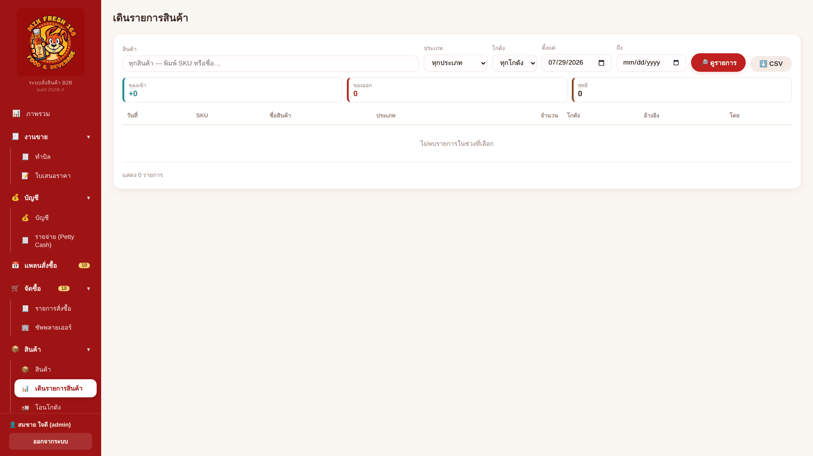
ภาพ 8.4 — หน้าเดินรายการสินค้า
8.5 คลังสินค้า
- เมนูซ้าย → สินค้า → คลังสินค้า
- ดูยอดคงเหลือแยกตามคลังได้ที่ตารางด้านบน
- ถ้าจะเพิ่มคลังใหม่ กรอกชื่อคลัง ผู้ติดต่อ เบอร์ และที่อยู่ แล้วกด บันทึกคลัง
- พิมพ์รหัสไปรษณีย์ 5 หลัก ระบบจะเติมจังหวัด/อำเภอให้อัตโนมัติ
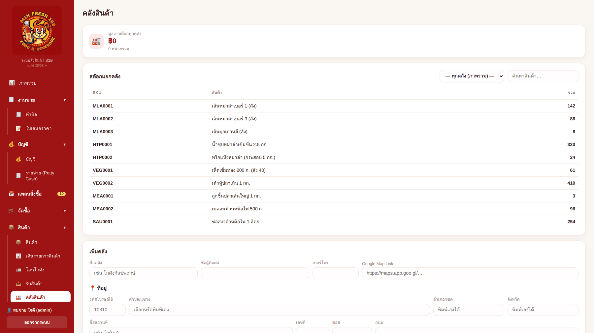
ภาพ 8.5 — หน้าคลังสินค้า
8.6 ดูต้นทุนสินค้า
- เมนูซ้าย → ผู้ใช้ → ต้นทุนสินค้า
- ใส่ รหัส 6 หลัก ของหน้านี้ แล้วกด ปลดล็อก
- ถ้ายังไม่เคยตั้ง ระบบจะให้ตั้งรหัสครั้งแรกตรงนี้
- ดูหรือแก้ต้นทุนได้ แล้วกด 💾 บันทึกที่แก้
- ใช้เสร็จกด 🔒 ล็อก ทุกครั้ง
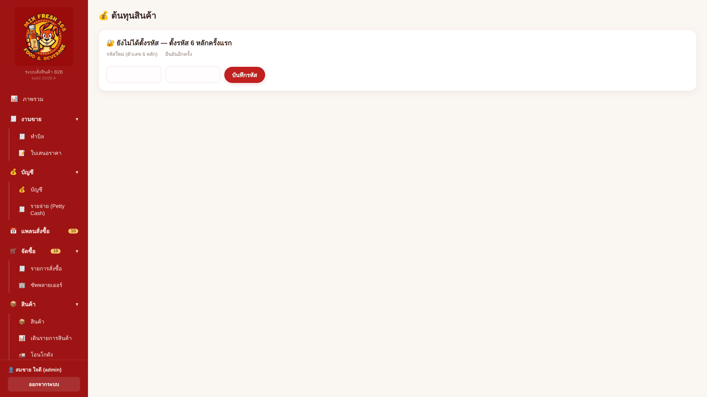
ภาพ 8.6 — หน้าต้นทุนสินค้า (ล็อกด้วยรหัส 6 หลัก)
บทที่ 9วางแผนและสั่งซื้อ
แทนที่จะเดาว่าต้องสั่งเท่าไหร่ ให้ระบบคำนวณจากยอดขายจริงย้อนหลังให้
9.1 แพลนการสั่งซื้อ
- เมนูซ้าย → แพลนสั่งซื้อ
- ตั้งค่าตัวเลข 4 ตัวด้านบน
- ดูยอดขายย้อนหลัง — แนะนำ 90 วัน (ยิ่งยาวยิ่งแม่น)
- รอของ (วัน) — สั่งแล้วกี่วันของถึง
- รอบสั่งทุก (วัน) — เราสั่งถี่แค่ไหน
- เผื่อฉุกเฉิน (วัน) — กันของขาดกรณีขายดีผิดปกติ
- เลือก คาดการณ์ยอด เป็น "ตามเทรนด์ (แนะนำ)"
- ติ๊ก เฉพาะที่ต้องสั่ง เพื่อกรองเอาเฉพาะตัวที่ขาด
- กด 🧮 คำนวณแผน
- อ่านผลในตาราง แล้วเลือกทำต่อ
- 📋 คัดลอกใบสั่งซื้อ — ได้ข้อความไปวางส่งซัพพลายเออร์
- 📦 บันทึกเป็นใบสั่งซื้อ — เก็บไว้ในระบบ แล้วตัดยอดตอนของมาถึง
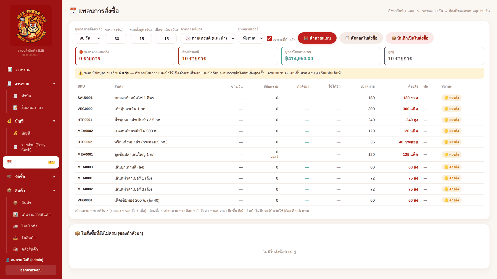
ภาพ 9.1 — หน้าแพลนการสั่งซื้อ
สูตรที่ระบบใช้
เป้าหมาย = ขาย/วัน × (รอของ + รอบสั่ง + เผื่อ)
ต้องสั่ง = เป้าหมาย − (สต๊อก + ของกำลังมา − ยอดจอง)
ข้อควรรู้
จำนวนที่ต้องสั่งจะถูกปัดขึ้นเป็นเลขลงท้าย 5 หรือ 0 · สินค้าที่ยังไม่มีประวัติขายจะใช้ค่า Max Stock แทน ·
ถ้ามีข้อมูลขายจริงน้อยกว่า 30 วัน ระบบจะขึ้นคำเตือนว่าตัวเลขยังแกว่ง
9.2 หน้าจัดซื้อ
- เมนูซ้าย → จัดซื้อ → รายการสั่งซื้อ
- เลือก โกดังที่ต้องเติม และ ซัพพลายเออร์
- กด 🧮 คำนวณรายการที่ต้องซื้อ
- เลือกวิธีส่งต่อ: 📋 คัดลอกข้อความสั่งซื้อ · 🖼️ รูปสรุปจัดซื้อ · 📲 ส่งเข้ากลุ่มสรุป
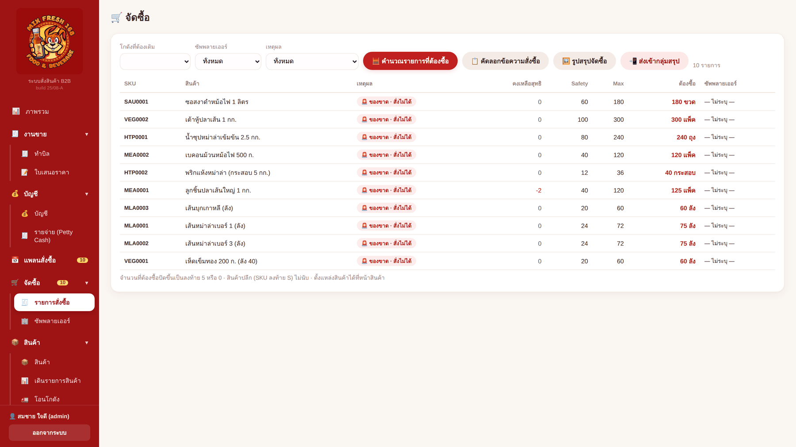
ภาพ 9.2 — หน้าจัดซื้อ
9.3 ซัพพลายเออร์
- เมนูซ้าย → จัดซื้อ → ซัพพลายเออร์
- เพิ่มชื่อผู้ขาย ผู้ติดต่อ และเบอร์โทร แล้วบันทึก
- กลับไปผูกซัพพลายเออร์กับสินค้าได้ที่หน้า สินค้า (ติ๊กได้หลายราย)
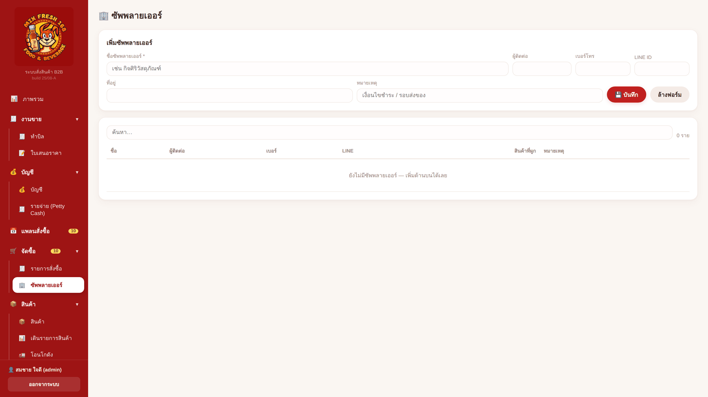
ภาพ 9.3 — หน้าซัพพลายเออร์
บทที่ 10ดูแลลูกค้าและการตลาด
ระบบช่วยบอกว่าควรโทรหาใครก่อน และช่วยส่งโปรหาหลายร้านพร้อมกัน
10.1 ลูกค้า CRM — ใครควรโทรหาวันนี้
- เมนูซ้าย → ลูกค้า → ลูกค้า CRM
- อ่านผลตาม 3 กลุ่ม
- ⏰ ใกล้ถึงรอบสั่งครั้งถัดไป — ระบบคำนวณจากรอบสั่งเฉลี่ยของร้านนั้นเอง โทรตอนนี้มีโอกาสได้ออเดอร์สูงสุด
- 🟠 ขาดการซื้อ 1 เดือน (30–59 วัน) — เริ่มห่าง ควรทักถาม
- 🔴 ขาดการซื้อ 2 เดือนขึ้นไป — เสี่ยงเสียลูกค้า ควรรีบตาม
- ใส่โน้ตหรือติดสีให้ลูกค้าไว้ตามงานที่ทำไปแล้วได้
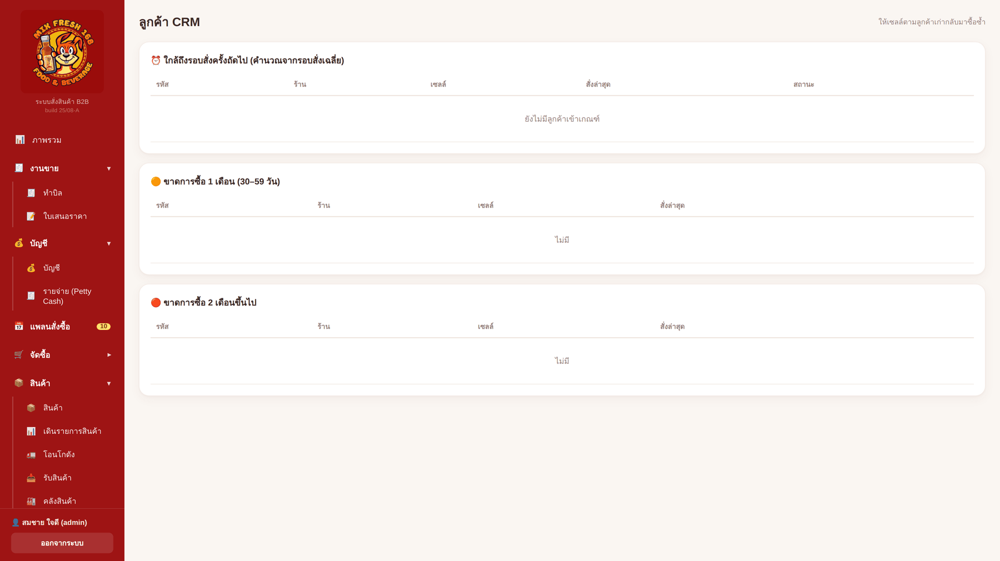
ภาพ 10.1 — หน้าลูกค้า CRM
10.2 ส่งข้อความบรอดแคสต์ และตั้งโปรลดราคา
- เมนูซ้าย → โปรโมชั่น → ส่งข้อความบรอดแคสต์
- เลือกโหมด
- 💬 ข้อความทั่วไป — ส่งข้อความหรือรูป/วิดีโอหาหลายร้าน
- 🔥 โปรลดราคาสินค้า — ตั้งราคาโปรพร้อมวันเวลาเริ่มและหมดเขต
- ถ้าเป็นโปร: เลือกสินค้า ใส่ ราคาโปร วันเวลาเริ่มและสิ้นสุด
- ติ๊ก 💸 แก้ราคาจริงในระบบตามช่วงโปร ถ้าต้องการให้ราคาเปลี่ยนจริงตามเวลา (ไม่ใช่แค่ประกาศ)
- เลือกร้านที่จะส่ง — กด 🔎 ค้นหาร้านที่เข้าเกณฑ์ หรือ ☑ เลือกทั้งหมดที่แสดง
- ตรวจข้อความอีกครั้ง แล้วกด 📣 ส่งข้อความ
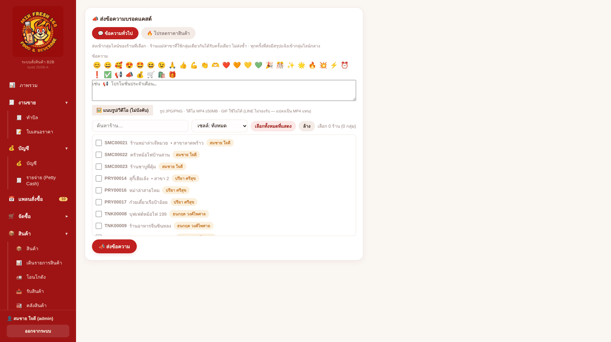
ภาพ 10.2 — หน้าส่งข้อความบรอดแคสต์
ส่งแล้วเรียกคืนไม่ได้
ข้อความเข้ากลุ่มไลน์ลูกค้าจริง ให้อ่านทวนและเช็ครายชื่อร้านที่เลือกไว้ก่อนกดส่งทุกครั้ง
อยากดูผลของโปรที่ตั้งไว้ ไปที่ โปรโมชั่น → รายละเอียดการลดราคา
10.3 ใบเสนอราคา
- เมนูซ้าย → งานขาย → ใบเสนอราคา
- เลือกลูกค้าในระบบ หรือพิมพ์ชื่อร้านเองสำหรับลูกค้าใหม่ที่ยังไม่ได้เปิดรหัส
- ใส่ ยืนราคา (วัน)
- เพิ่มสินค้าและจำนวนทีละรายการด้วยปุ่ม + เพิ่ม
- เลือกวิธีส่ง: 🖼️ สร้างใบเสนอราคา (PNG) · 📄 PDF · 📲 สร้าง + ส่งเข้ากลุ่ม LINE
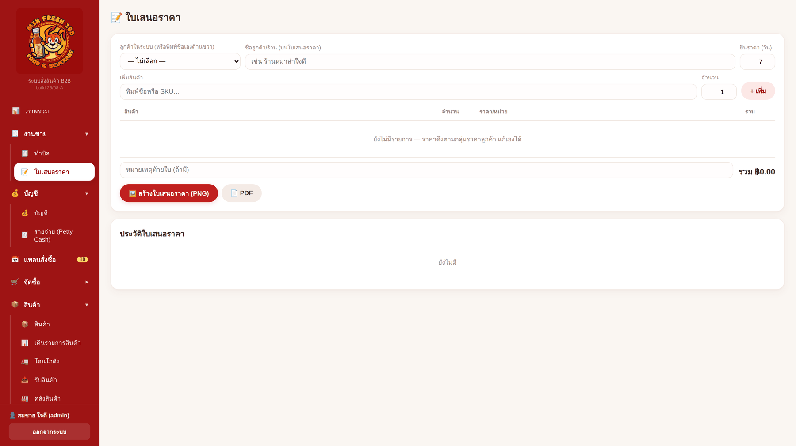
ภาพ 10.3 — หน้าใบเสนอราคา
10.4 คำนวณค่าส่ง BI
- เมนูซ้าย → ลูกค้า → คำนวณค่าส่ง
- เลือกลูกค้า — ระบบตั้งเรทค่าส่งของร้านนั้นให้อัตโนมัติ
- เพิ่มสินค้าจริงเพื่อให้ระบบรู้ว่าลังไหนเป็นชิ้นใหญ่ หรือกรอกจำนวนลังเองแบบเร็ว ๆ
- กด 📋 คัดลอกผล เพื่อเอาไปวางในแชทหรือในช่องค่าส่งตอนออกบิล
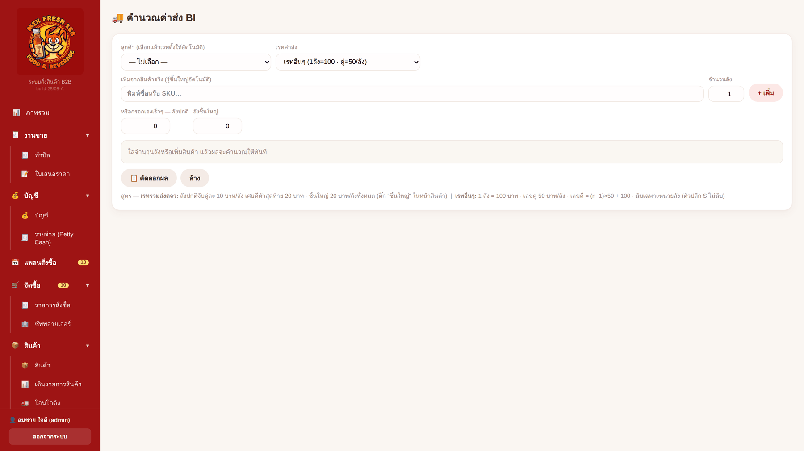
ภาพ 10.4 — หน้าคำนวณค่าส่ง BI
10.5 ประวัติสั่งซื้อ และแผนที่ลูกค้า
- ลูกค้า → ประวัติสั่งซื้อ — เลือกร้าน จะเห็นว่าสั่งไปกี่ออเดอร์ และสั่งอะไรบ้าง ใช้เตรียมตัวก่อนโทรหาลูกค้า
- ลูกค้า → แผนที่ลูกค้า — หมุดขนาดและสีตามยอดขาย คลิกหมุดดูรายละเอียดร้านได้
- ร้านไหนยังไม่มีหมุด กด 📍 หาพิกัดร้านที่ยังไม่มี ระบบจะหาพิกัดจากที่อยู่ให้
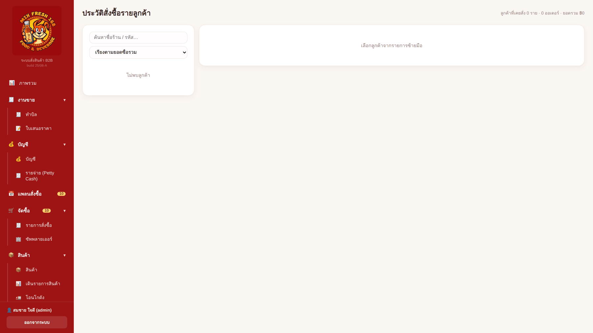
ภาพ 10.5 — ประวัติสั่งซื้อรายลูกค้า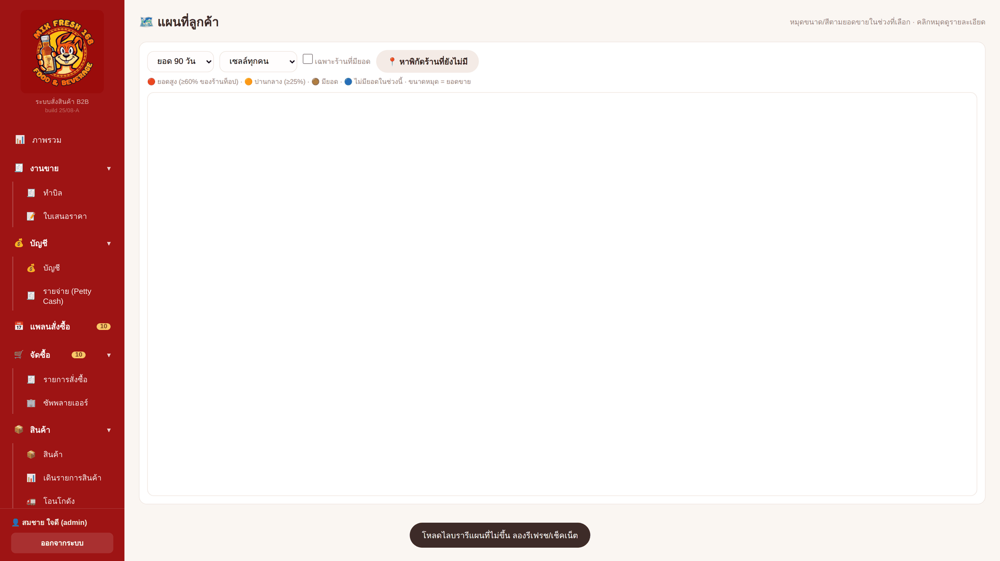
ภาพ 10.6 — แผนที่ลูกค้าบทที่ 11อ่านรายงานในหน้าภาพรวม
การ์ดทุกใบในหน้าภาพรวมไม่ใช่แค่ตัวเลข — หลายใบกดเข้าไปดูรายละเอียดได้
11.1 การ์ดสรุป 8 ใบ
| การ์ด | บอกอะไร · กดได้ไหม |
|---|
| 💵 ยอดขายช่วงที่เลือก | ยอดขายตามช่วงเวลาที่กรองไว้ พร้อมยอดของวันนี้ด้านล่าง |
| 📈 ยอดขายเดือนนี้ | ยอดของเดือนปัจจุบันเสมอ ไม่เปลี่ยนตามตัวกรอง |
| 🧾 ออเดอร์รอทำบิล | จำนวนออเดอร์ที่ยังไม่ได้ออกบิล |
| ⏳ ยอดค้างจ่าย | กดได้ — เข้าไปดูยอดค้างแยกรายเดือน แล้วเจาะต่อเป็นรายเซลล์และรายร้าน |
| 🏭 มูลค่าสต๊อกคงเหลือ | มูลค่ารวมของของที่ยังอยู่ในคลัง |
| 📈 กำไรขั้นต้น | ยอดขายหักต้นทุน FIFO ในช่วงที่เลือก |
| 🗑️ มูลค่าของเสีย | ของที่ถูกบันทึกเป็นของเสียในช่วงที่เลือก |
| 🤝 ลูกค้าใหม่ | กดได้ — ดูรายวัน ดูว่าใครเป็นคนเพิ่ม และดูรายชื่อทั้งหมด (หัวข้อ 11.2) |
11.2 ลูกค้าใหม่รายวัน และใครเป็นคนเพิ่ม
ความสามารถนี้เพิ่มเข้ามาใน build 25/08-A
- ที่หน้า ภาพรวม เลือกช่วงเวลาที่ต้องการก่อน (เช่น เดือนนี้)
- กดการ์ด 🤝 ลูกค้าใหม่ (ช่วงที่เลือก)
- เลือกมุมมองจากปุ่มด้านบนของหน้าต่างที่เด้งขึ้นมา
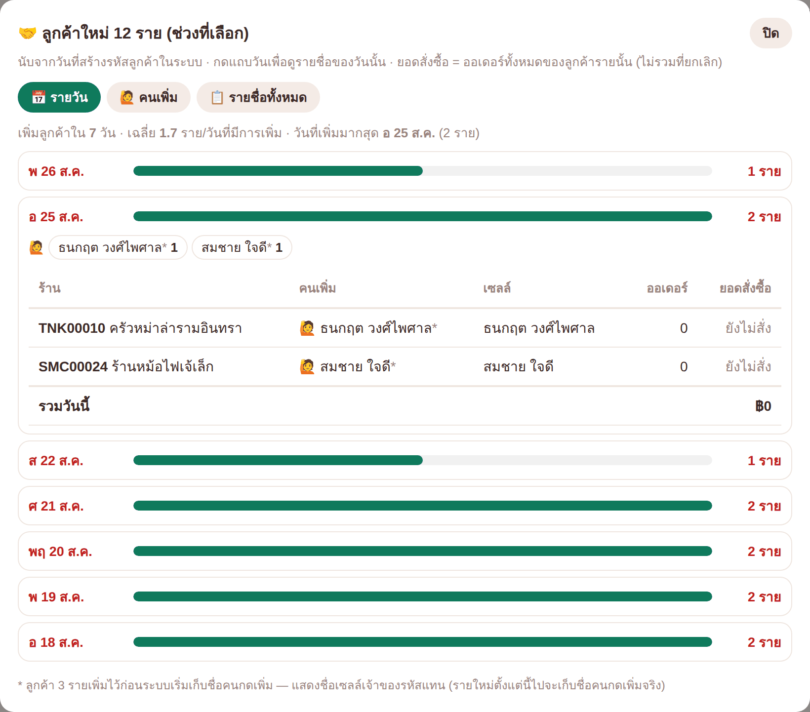
ภาพ 11.1 — มุมมอง 📅 รายวัน (กดแถบวันเพื่อกางรายชื่อของวันนั้น)
| มุมมอง | เห็นอะไร |
|---|
| 📅 รายวัน | บรรทัดสรุปด้านบนบอกว่าเพิ่มลูกค้าไปกี่วัน เฉลี่ยกี่รายต่อวัน และวันไหนเพิ่มมากสุด · แต่ละแถบวันมีแถบเทียบสัดส่วนและจำนวนราย · กดแถบวันเพื่อกางดูว่าวันนั้นใครเพิ่มบ้าง และรายชื่อร้านพร้อมยอดสั่งซื้อ |
| 🙋 คนเพิ่ม | ใครเพิ่มลูกค้าไปกี่ราย กระจายกี่วัน เฉลี่ยต่อวันเท่าไหร่ และยอดสั่งซื้อรวมที่ตามมา (คนที่เพิ่มมากสุดได้ 🥇) |
| 📋 รายชื่อทั้งหมด | รายชื่อร้านทั้งหมดในช่วง พร้อมคนเพิ่ม เซลล์ วันที่เข้ามา จำนวนออเดอร์ และยอดสั่งซื้อ |
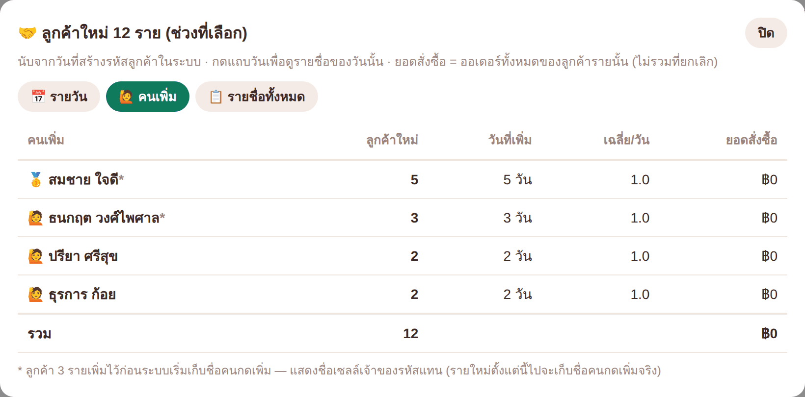
ภาพ 11.2 — มุมมอง 🙋 คนเพิ่ม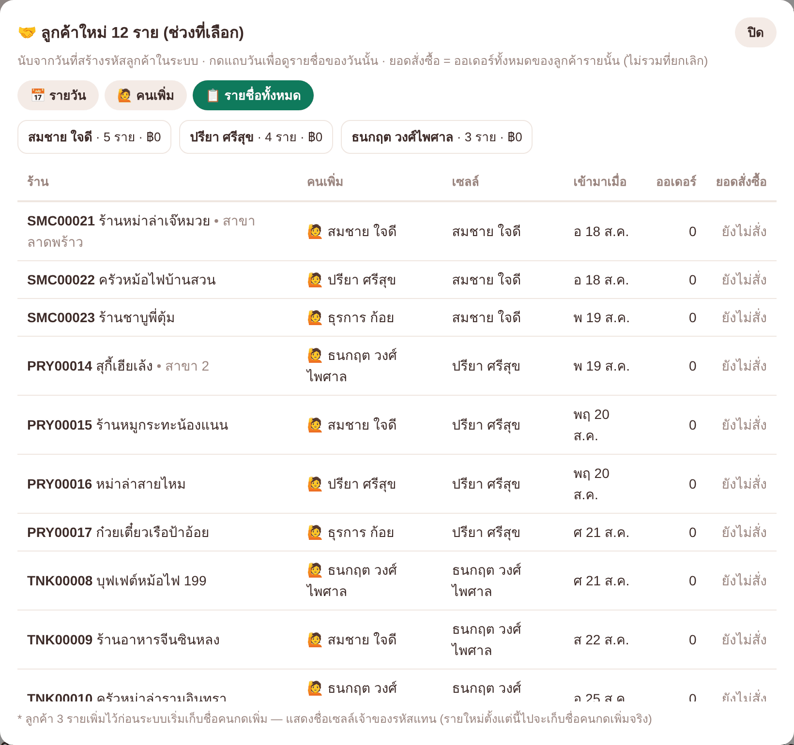
ภาพ 11.3 — มุมมอง 📋 รายชื่อทั้งหมดเครื่องหมาย * ข้างชื่อคนเพิ่มแปลว่าอะไร
ลูกค้าที่ถูกเพิ่มไว้ก่อนระบบเริ่มเก็บชื่อคนกดเพิ่ม จะไม่มีข้อมูลตรงนี้ ระบบจึงแสดงชื่อเซลล์เจ้าของรหัสแทนพร้อมเครื่องหมาย *
ส่วนลูกค้าที่เพิ่มใหม่ตั้งแต่ build 25/08-A เป็นต้นไป จะเก็บชื่อคนที่ล็อกอินกดเพิ่มจริง
11.3 ทำเนียบแชมป์เซลล์
- ที่หน้าภาพรวม เลื่อนลงไปการ์ด สรุปยอดต่อเซลล์
- กดปุ่ม 🏆 ทำเนียบแชมป์
- จะเห็นอันดับ 🥇🥈🥉 ของแต่ละเดือนย้อนหลัง 12 เดือน และนับให้ว่าใครได้ที่ 1 ไปกี่เดือน
- เดือนปัจจุบันจะมีป้าย "ยังไม่จบ" กำกับไว้ และไม่ถูกนับเป็นแชมป์
บทที่ 12ปัญหาที่พบบ่อยและวิธีแก้
ลองไล่ตามตารางนี้ก่อนแจ้งคนดูแลระบบ — ส่วนใหญ่แก้เองได้
| อาการ | สาเหตุที่พบบ่อย | วิธีแก้ |
|---|
| ลูกค้าเปิดลิงก์แล้วเห็นหน้าว่าง ไม่มีสินค้า | ยังไม่ได้จัดสินค้าให้ร้านนั้น | ไปหน้า จัดสินค้า เลือกร้าน ติ๊กสินค้า แล้วบันทึก (หัวข้อ 4.4) |
| ลูกค้าเปิดลิงก์แล้วขึ้น "เปิดหน้านี้ไม่ได้" | ลิงก์ผิด ลิงก์เก่า หรือร้านถูกปิดใช้งาน | สร้างลิงก์ใหม่จากหน้า ลูกค้า แล้วส่งให้ใหม่ |
| ออกบิลแล้วบิลไม่เข้ากลุ่มไลน์ | ร้านยังไม่ได้ผูก LINE Group ID | ผูกกลุ่มตามหัวข้อ 4.5 · ระหว่างนี้ส่งรูปบิลให้ลูกค้าเองไปก่อน |
| ยอดสต๊อกในระบบไม่ตรงของจริง | รับของเข้ามาแล้วไม่ได้บันทึก หรือมีของเสีย/แตกหักที่ยังไม่บันทึก | ใช้หน้า นับ/ปรับสต๊อก นับแล้วปรับ (หัวข้อ 8.3) จากนั้นไล่ดูที่หน้า เดินรายการสินค้า |
| กำไรในบิลดูผิดปกติ | ราคาทุนตอนรับของใส่ผิด | เปิดหน้า ต้นทุนสินค้า ตรวจล็อตนั้น แล้วแก้ให้ถูก |
| แก้บิลไม่ได้ ขึ้นว่าต้องรออนุมัติ | บิลใบนั้นส่งของแล้วหรือรับยอดแล้ว | เป็นเรื่องปกติ — ให้ admin เข้าไปกด 🛎️ คำขอแก้บิล อนุมัติให้ |
| สรุปออเดอร์เช้านี้ไม่เข้ากลุ่มกลาง | เป็นวันอาทิตย์หรือวันหยุดที่ตั้งไว้ หรือรอบนั้นไม่มีออเดอร์ | กด 🕘 ประวัติการส่งสรุป ดูว่ารอบนั้นถูกข้ามเพราะอะไร · ถ้าอยากส่งเดี๋ยวนี้ใช้ปุ่มส่งด้วยมือ (หัวข้อ 6.5) |
| บิลออกแล้วแต่ยังไม่มีรูป | คิวการวาดรูปยังไม่ถึง หรือตัววาดบนเครื่องในออฟฟิศไม่ทำงาน | รอประมาณ 10 นาที ระบบสำรองจะวาดให้เอง · ถ้าเกินกว่านั้นให้แจ้งคนดูแลระบบ |
| กดปุ่มแล้วไม่มีอะไรเกิดขึ้น | อินเทอร์เน็ตหลุด หรือหน้าเว็บค้างเพราะเปิดทิ้งไว้นาน | กด F5 เพื่อโหลดหน้าใหม่ แล้วลองอีกครั้ง |
| ตัวเลขบนหน้าจอไม่อัปเดต | หน้าเว็บยังถือข้อมูลเก่าอยู่ | กด Ctrl+F5 เพื่อล้างแคชและโหลดใหม่ |
| ลืมรหัสผ่านเข้าระบบ | — | ให้ admin เข้าหน้า ผู้ใช้ระบบ กดแก้ไขผู้ใช้นั้น แล้วตั้งรหัสใหม่ให้ |
| ลูกค้าลืม PIN 6 หลัก | — | ให้ลูกค้าพิมพ์ เปลี่ยน ตามด้วยรหัสใหม่ 6 หลัก ในกลุ่มไลน์ของร้าน |
เวลาแจ้งปัญหา ให้บอก 4 อย่างนี้เสมอ
(1) เลข build ที่อยู่ใต้โลโก้มุมซ้ายบน (2) หน้าไหน (3) กดปุ่มอะไร (4) ข้อความที่ขึ้นบนจอ (แคปหน้าจอมาด้วยยิ่งดี)
ภาคผนวก กตารางเวลางานอัตโนมัติ
รอบพวกนี้ทำงานบนคลาวด์ ไม่ต้องมีใครเปิดเครื่องรอ
| รอบงาน | ความถี่ | ทำอะไร |
|---|
| ออกบิลอัตโนมัติ | ทุก 3 นาที | ออกบิลให้ออเดอร์ที่ถึงรอบตัดแล้ว และสั่งวาดรูปบิล (ข้ามร้านที่ตั้งยกเว้นไว้) |
| สรุปออเดอร์ประจำวัน | ทุกวัน 06:00 น. | ส่งสรุปออเดอร์เป็นไฟล์ PDF เข้ากลุ่มกลาง แยกตามวิธีขนส่ง · ข้ามวันอาทิตย์และวันหยุดที่ตั้งไว้ |
| ยามตรวจซ้ำ | ทุก 15 นาที | ตรวจว่ารอบสรุปส่งไปแล้วจริงไหม ถ้าพลาดจะส่งแทนให้ภายใน 15 นาที · นอกช่วงหนึ่งชั่วโมงแรกหลังเวลาตัดรอบจะไม่ทำอะไร |
| ตัววาดบิลบน NAS | ต่อเนื่อง | วาดรูปบิลเทมเพลตเต็มรูปแบบ ~1.4 วินาที/ใบ · ถ้าใบไหนค้างเกิน 10 นาที ระบบบนคลาวด์จะวาดแทนด้วยเทมเพลตเรียบง่าย |
ภาคผนวก ขสถานะต่าง ๆ ในระบบ
| สถานะ | หมายความว่า |
|---|
| ยังไม่ออกบิล | ออเดอร์ที่ลูกค้าสั่งแล้ว แต่ยังไม่ได้ออกบิล — สต๊อกถูกจองไว้แต่ยังไม่ถูกตัดจริง |
| รอส่ง | ออกบิลแล้ว แต่ยังไม่ได้กดยืนยันส่งของ |
| ส่งแล้ว | ยืนยันแล้วว่าของออกจากคลังไปถึงลูกค้า |
| ยกเลิก | บิลถูกยกเลิก ไม่นับเป็นหนี้ค้างและไม่นับเป็นรายรับ |
| ค้างจ่าย | ยังไม่ได้รับเงินเลย |
| บางส่วน | ได้รับเงินมาแล้วบางส่วน ระบบแสดงยอดที่ยังค้างให้ |
| ✓ จ่ายแล้ว | รับเงินครบแล้ว มีชื่อคนรับยอดและเวลากำกับ |
| v.2 (หรือสูงกว่า) | บิลใบนี้ถูกแก้มาแล้ว ตัวเลขคือเวอร์ชันปัจจุบัน |
| พร้อมจำหน่าย / ใกล้หมด / หมด | ป้ายสถานะสต๊อกที่ลูกค้าเห็นในหน้าสั่งของ (ไม่บอกจำนวนจริง) |
ภาคผนวก คสิ่งที่ต้องทำก่อนใช้ความสามารถใหม่
สำหรับคนดูแลระบบเท่านั้น
ค.1 เปิดใช้งาน "ลูกค้าใหม่รายวัน + ใครเป็นคนเพิ่ม"
- เปิดหน้าจัดการฐานข้อมูล แล้วเข้าส่วน SQL Editor
- ล้างแท็บให้ว่างก่อน แล้ววางเนื้อหาไฟล์
customers_created_by.sql ทั้งไฟล์
- กดรัน — คำสั่งนี้เพิ่มคอลัมน์
created_by ในตาราง customers
- อัปหน้าเว็บหลังบ้าน build 25/08-A ขึ้นแทนของเดิม
- เปิดหน้าเว็บใหม่ แล้วตรวจว่าเลข build ใต้โลโก้เปลี่ยนเป็น
25/08-A
ข้อมูลเก่าย้อนหลังไม่ได้
ลูกค้าที่มีอยู่ก่อนหน้านี้จะไม่มีชื่อคนกดเพิ่ม เพราะระบบไม่เคยเก็บไว้ หน้าจอจะแสดงชื่อเซลล์เจ้าของรหัสแทนพร้อมเครื่องหมาย *
ส่วนลูกค้าที่เพิ่มหลังจากนี้จะเก็บชื่อจริงของคนที่ล็อกอินกดเพิ่ม
ค.2 กติกาเวลาแก้หน้าเว็บ
- ทุกครั้งที่แก้หน้าเว็บ ต้องเปลี่ยนเลข build ใต้โลโก้ด้วยเสมอ จะได้รู้ว่าเครื่องไหนใช้เวอร์ชันอะไรอยู่
- ก่อนแก้ ให้ดึงไฟล์ล่าสุดมาก่อน อย่าแก้ต่อจากสำเนาเก่า
- แก้เสร็จให้ทดสอบหน้าที่แก้จริงก่อนเอาขึ้นใช้งาน